<!doctype html>
<html lang="en">
<head>
  <meta charset="utf-8">
  <meta name="viewport" content="width=device-width, initial-scale=1">
  <title>arxiv digest — 2026-09-02</title>
  <style>
:root {
  --bg: #ffffff;
  --fg: #1f2328;
  --muted: #59636e;
  --border: #d0d7de;
  --card: #f6f8fa;
  --link: #0969da;
}
body {
  max-width: 980px;
  margin: 0 auto;
  padding: 2rem 1rem 5rem;
  font-family: -apple-system, BlinkMacSystemFont, "Segoe UI", Helvetica, Arial, sans-serif;
  line-height: 1.55;
  color: var(--fg);
  background: var(--bg);
}
a { color: var(--link); }
img { max-width: 100%; height: auto; }
pre, code { background: var(--card); border-radius: 6px; }
pre { padding: 1rem; overflow-x: auto; }
blockquote { border-left: 4px solid var(--border); padding-left: 1rem; color: var(--muted); }
details { margin: 0.6rem 0; }
summary { cursor: pointer; font-weight: 600; }
.paper-figures-scroll {
  display: flex;
  gap: 1rem;
  overflow-x: auto;
  overscroll-behavior-x: contain;
  padding: 0.75rem 0.25rem 1rem;
  margin: 1rem 0 1.25rem;
  border-top: 1px solid var(--border);
  border-bottom: 1px solid var(--border);
  scroll-snap-type: x proximity;
}
.paper-figure-card {
  flex: 0 0 min(260px, 72vw);
  scroll-snap-align: start;
  background: var(--card);
  border: 1px solid var(--border);
  border-radius: 12px;
  padding: 0.55rem;
}
.paper-figure-card img {
  display: block;
  width: 100%;
  max-height: 240px;
  object-fit: contain;
  background: white;
  border-radius: 8px;
}
.paper-figure-caption {
  display: block;
  margin-top: 0.5rem;
  color: var(--muted);
  font-size: 0.85rem;
}
.figure-strip-hint {
  color: var(--muted);
  font-size: 0.9rem;
  margin-bottom: -0.3rem;
}
</style>
  <!-- MathJax: renders $...$ inline math and $$...$$ display math, plus
       \(...\) and \[...\]. Loaded from the official CDN; works offline
       once cached. Configured to skip code/pre blocks so arxiv IDs that
       look like dollar amounts don't get mangled. -->
  <script>
    window.MathJax = {
      tex: {
        inlineMath: [['$', '$'], ['\\(', '\\)']],
        displayMath: [['$$', '$$'], ['\\[', '\\]']],
        processEscapes: true,
        processEnvironments: true
      },
      options: {
        skipHtmlTags: ['script', 'noscript', 'style', 'textarea', 'pre', 'code'],
        ignoreHtmlClass: 'tex2jax_ignore',
        processHtmlClass: 'tex2jax_process'
      }
    };
  </script>
  <script id="MathJax-script" async
    src="https://cdn.jsdelivr.net/npm/mathjax@3/es5/tex-chtml.js"></script>
</head>
<body>
<header style="background-color: #333; color: white; padding: 15px; margin-bottom: 20px;">
  <h1 style="margin: 0; font-size: 24px;">
    <a href="https://ochelpan.github.io/arXiv_clean/" style="color: white; text-decoration: none;">Main</a>
  </h1>
</header>

<h1>Daily arXiv Report</h1>

<hr>
<p>
<a href="index.html">← Index</a>
 · <a href="papers_07.html">← Previous</a> · <a href="papers_09.html">Next →</a>
</p>
<hr>

<h2>Papers 141–160</h2>
<p><a id="paper-2608.29124"></a></p>
<h3 id="a-route-to-the-thermodynamics-of-colloid-polymer-mixtures-from-structural-information"><a href="http://arxiv.org/abs/2608.29124v1">A route to the thermodynamics of colloid-polymer mixtures from structural information</a></h3>
<p><strong>Authors:</strong> Vikki Anand Varma, Andrew J. Archer, Alberto Scacchi<br>
<strong>Type:</strong> theory · <strong>Category:</strong> statistical mechanics · <strong>PDF:</strong> <a href="https://arxiv.org/pdf/2608.29124v1">https://arxiv.org/pdf/2608.29124v1</a><br>
<strong>Analysis basis:</strong> full PDF text, analyzed in chunks</p>
<div class="figure-strip-hint">↔ Scroll figures horizontally</div>
<div class="paper-figures-scroll">
<figure class="paper-figure-card">
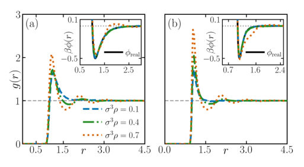
<figcaption class="paper-figure-caption"><b>Fig 1.</b> FIG. 1. RDFs obtained from Langevin dynamics simulations for (a) 12–6 and (b) 24–12 Mie potential with βϵ = 0.5 at number densities σ3ρ = 0.1, 0.4, and 0.7, respectively. The insets show the pair potentials used in the simulations, ϕreal, together with the reconstructed potentials obtained with the IBI from the corresponding RDFs.</figcaption>
</figure>
<figure class="paper-figure-card">
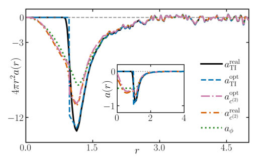
<figcaption class="paper-figure-caption"><b>Fig 2.</b> FIG. 3. Kernel a(r), as defined in Eqs. (11) and (19), for a 12–6 LJ potential with βϵ = 0.5 at number density σ3ρ = 0.4, obtained using the different routes. The solid lines show the TI result using the WCA reference, while the long-dashed lines show the corresponding result using the optimized hard- sphere reference. The long dash-dotted lines show the ∆c(2)</figcaption>
</figure>
<figure class="paper-figure-card">
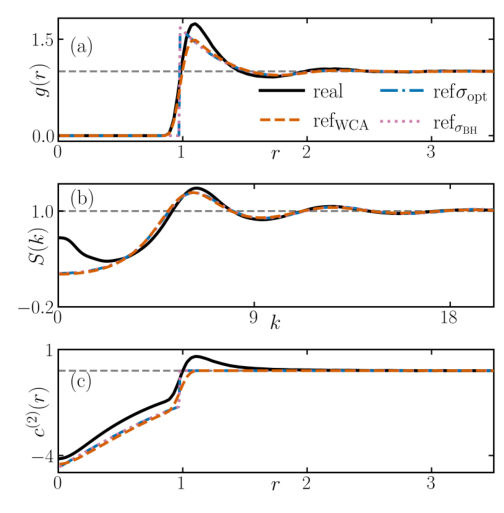
<figcaption class="paper-figure-caption"><b>Fig 3.</b> FIG. 2. Structural correlation functions for a 12–6 LJ poten- tial with βϵ = 0.5 at number density σ3ρ = 0.4. The black solid curves correspond to the real system, with the input RDF obtained from Langevin dynamics simulations. Panel (a) shows the RDF, panel (b) the static structure factor, and panel (c) the DCF. The dashed curves correspond to the WCA reference system, obtained by retaining only the repul- sive contribution of the IBI-reconstructed interaction poten- tial. The dash-dotted curves show the effective hard-sphere reference system with diameter σopt [see Eq. (3)], while the short-dashed curves correspond to the hard-sphere reference system with the diameter determined from the...</figcaption>
</figure>
<figure class="paper-figure-card">
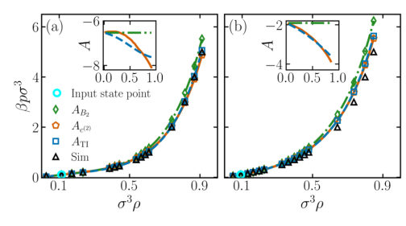
<figcaption class="paper-figure-caption"><b>Fig 4.</b> FIG. 4. Equation of state for a one-component fluid inter- acting through (a) the Lennard–Jones 12–6 potential and (b) the generalized Mie 24–12 potential, both with βϵ = 0.5. Tri- angles denote simulation results, diamonds the virial route, squares the TI route, and circles the DCF route. The in- set shows the corresponding density dependent integrated strength.</figcaption>
</figure>
<figure class="paper-figure-card">
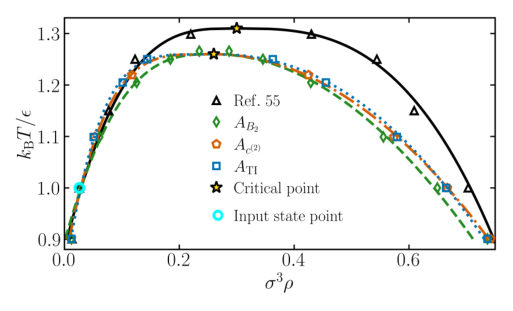
<figcaption class="paper-figure-caption"><b>Fig 5.</b> FIG. 5. Binodal curves for the 12–6 system obtained using the different routes, compared with simulation data from Ref. 55. Stars denote the critical points. The open circle marks the single state point, (σ3ρ, kBTϵ−1) = (0.05, 1), used as struc- tural input.</figcaption>
</figure>
</div>
<p><strong>Summary.</strong> This work presents a powerful theoretical framework to calculate the thermodynamics and phase behavior of complex fluids, such as colloid-polymer mixtures, using only structural data obtained at one state point. By decomposing the free energy into reference (excluded-volume) and tail components, the authors bypass the need to know the underlying interaction potentials. This establishes a crucial link between measurable structural properties and macroscopic phase transitions.</p>
<p><strong>Why it may be interesting.</strong> While focused on classical fluids, the methodology of inferring macroscopic thermodynamic behavior (like phase boundaries) solely from single-point structural measurements is a powerful concept applicable to many-body quantum systems where direct potential knowledge is difficult.</p>
<details>
<summary>Detailed structure</summary>
<p><strong>Main problem.</strong> The paper develops a framework to predict the thermodynamics and phase behavior of complex fluids, specifically colloid-polymer mixtures, directly from structural correlations.</p>
<p><strong>Main result.</strong> It successfully demonstrates that structural information measured at a single state point is sufficient to construct the free energy functional and predict phase coexistence, bypassing the need for explicit interaction potentials.</p>
<p><strong>Method.</strong> The approach constructs the excess free energy by decomposing interactions into a reference (excluded-volume) part and a tail part, using structural inputs like the radial distribution function or direct correlation function.</p>
<p><strong>Model / system.</strong> The focus is on colloid-polymer mixtures and general fluid systems. The theory is built upon decomposing the total potential into a reference hard-sphere part and a remaining interaction tail, which is then analyzed using integral equation theory concepts.</p>
<p><strong>Key observables.</strong> Radial distribution functions (g(r)), static structure factors (S(k)), and the pair direct correlation function (c(r)).</p>
<p><strong>Important parameters / regimes.</strong> Effective hard-sphere diameter (sigma_opt), inverse temperature (beta), and the integrated attraction strength (A).</p>
<p><strong>Assumptions / limitations.</strong> The method assumes radial symmetry for interactions and relies on approximations like Fundamental Measure Theory (FMT) for the reference free energy and the Ornstein-Zernike equation closures.</p>
<p><strong>Figures summary.</strong> Figures illustrate the predicted binodal curve for a binary mixture and show the reconstruction of pair potentials from structural correlations.</p>
<p><strong>Paper structure.</strong> The paper establishes the general theory by decomposing the free energy, details the calculation routes (Thermodynamic Integration, DCF route, Virial route), and applies the framework sequentially to one-component systems before extending it to binary colloid-polymer mixtures to predict phase coexistence.</p>
</details>
<details>
<summary>Abstract</summary>
<p>Liquid-state theory provides a fundamental connection between microscopic structure and macroscopic thermodynamic behaviour. Here, we develop a framework for predicting thermodynamics and phase behaviour directly from structural correlations, using either radial distribution functions or static structure factors as input. The approach constructs a free-energy functional from structural information obtained at a single thermodynamic state point, without requiring explicit knowledge of the underlying interaction potentials. This circumvents a central difficulty in modelling complex fluids, for which effective interactions are often unknown or rely on approximations. We demonstrate the framework for a range of model fluids, including colloidal and colloid--polymer systems, with predictions in good agreement with molecular simulation data. The results show that structural information at a single state point can provide sufficient information to predict the broader thermodynamic response of a system. This establishes a route toward inferring phase behaviour directly from experimentally measured structure, even when the microscopic interactions are not known a priori.</p>
</details>
<p><sub><a href="#top">↑ back to top</a></sub></p>

<p><a id="paper-2608.29416"></a></p>
<h3 id="algorithmic-threshold-for-high-dimensional-projection-pursuit-i-general-theory"><a href="http://arxiv.org/abs/2608.29416v1">Algorithmic threshold for high-dimensional projection pursuit I: general theory</a></h3>
<p><strong>Authors:</strong> Brice Huang, Mark Sellke, Nike Sun<br>
<strong>Type:</strong> theory · <strong>Category:</strong> disordered systems and neural networks · <strong>PDF:</strong> <a href="https://arxiv.org/pdf/2608.29416v1">https://arxiv.org/pdf/2608.29416v1</a><br>
<strong>Analysis basis:</strong> full PDF text, analyzed in chunks</p>
<div class="figure-strip-hint">↔ Scroll figures horizontally</div>
<div class="paper-figures-scroll">
<figure class="paper-figure-card">
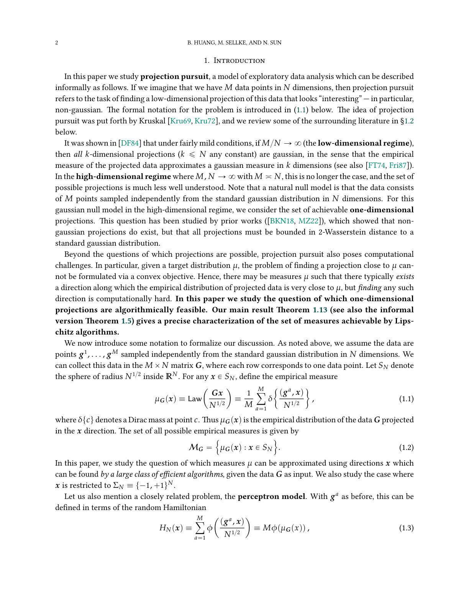
<figcaption class="paper-figure-caption"><b>Fig 1.</b> Low-resolution page preview, page 2</figcaption>
</figure>
<figure class="paper-figure-card">
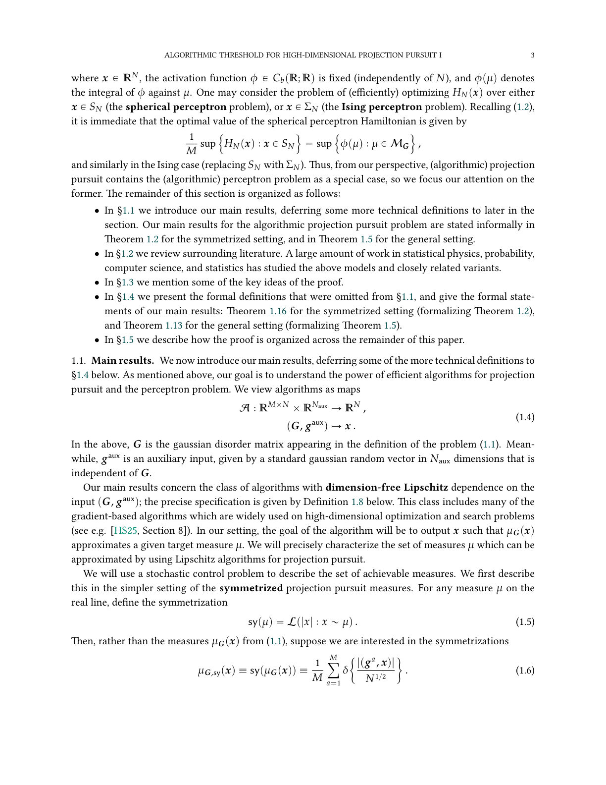
<figcaption class="paper-figure-caption"><b>Fig 2.</b> Low-resolution page preview, page 3</figcaption>
</figure>
<figure class="paper-figure-card">
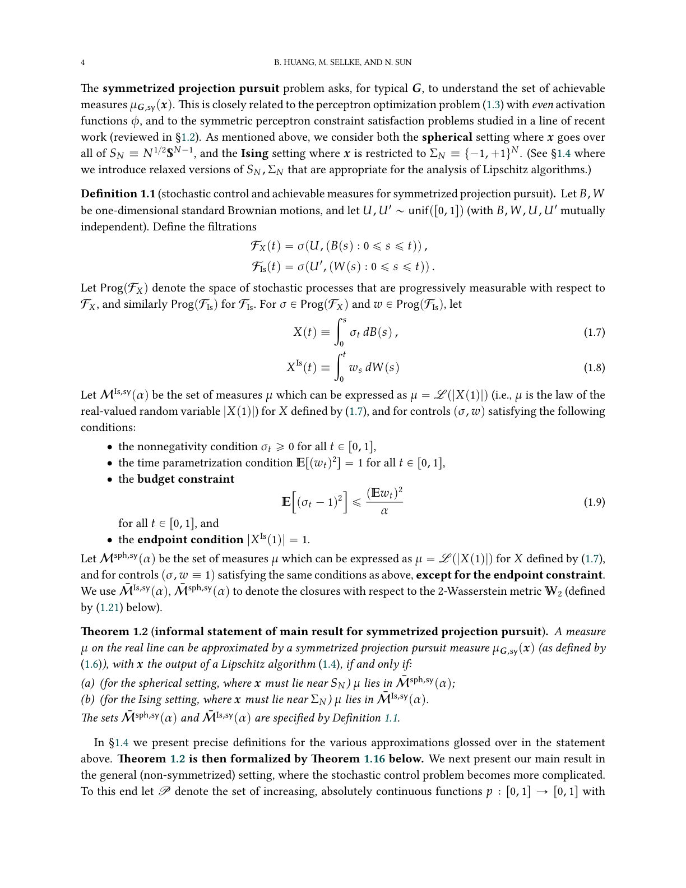
<figcaption class="paper-figure-caption"><b>Fig 3.</b> Low-resolution page preview, page 4</figcaption>
</figure>
<figure class="paper-figure-card">
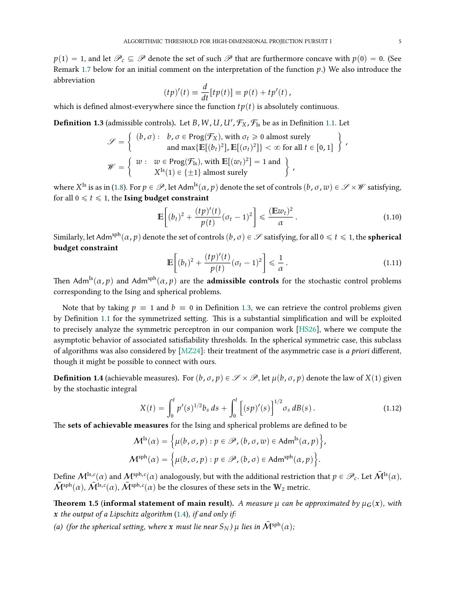
<figcaption class="paper-figure-caption"><b>Fig 4.</b> Low-resolution page preview, page 5</figcaption>
</figure>
<figure class="paper-figure-card">
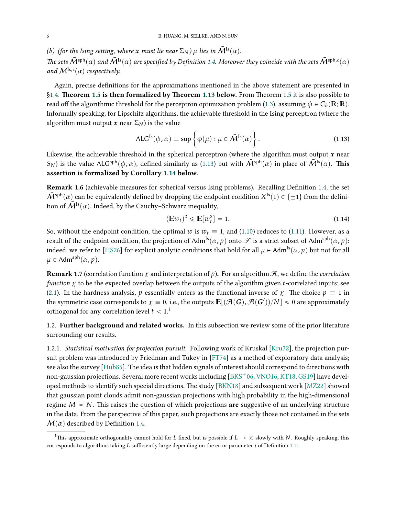
<figcaption class="paper-figure-caption"><b>Fig 5.</b> Low-resolution page preview, page 6</figcaption>
</figure>
</div>
<p><strong>Summary.</strong> This paper provides a rigorous characterization of the statistical distributions that can be extracted from high-dimensional Gaussian data using only algorithms with limited computational complexity. By framing the problem as a stochastic control problem, the authors derive exact algorithmic thresholds for optimizing models like the spherical and Ising perceptrons. This work significantly advances the understanding of algorithmic limitations in high-dimensional data analysis.</p>
<p><strong>Why it may be interesting.</strong> The rigorous mathematical framework connecting algorithmic constraints (Lipschitz dependence) to the achievable statistical properties of high-dimensional data is highly relevant for understanding the limits of inference in complex physical systems.</p>
<details>
<summary>Detailed structure</summary>
<p><strong>Main problem.</strong> The paper characterizes the set of one-dimensional empirical distributions achievable by projecting high-dimensional Gaussian data along a direction constrained by an algorithm.</p>
<p><strong>Main result.</strong> The set of achievable measures is exactly characterized by a one-dimensional stochastic control problem, yielding exact algorithmic thresholds for optimizing perceptron models.</p>
<p><strong>Method.</strong> The analysis employs stochastic control theory within the framework of projection pursuit, relating achievable measures to solutions of controlled Stochastic Differential Equations (SDEs).</p>
<p><strong>Model / system.</strong> The study uses a null model of high-dimensional projection pursuit with data points sampled i.i.d. from a standard Gaussian in $N$ dimensions. Related physical models include spherical and Ising perceptrons.</p>
<p><strong>Key observables.</strong> The achievable empirical distributions ($\mu$) of the projections, and the resulting algorithmic thresholds ($  ext{ALGIsp},    ext{ALGsphp}$).</p>
<p><strong>Important parameters / regimes.</strong> The high-dimensional regime defined by $M, N 	o \infty$ with $M/N 	o \alpha \in (0, \infty)$.</p>
<p><strong>Assumptions / limitations.</strong> The direction $\mathbf{x}$ must be the output of an algorithm with dimension-free Lipschitz dependence on the input data.</p>
<p><strong>Paper structure.</strong> The paper develops the characterization of achievable measures using stochastic control theory, establishing necessary and sufficient conditions (Theorems 1.2 and 1.5) based on the closure of sets defined by admissible controls.</p>
</details>
<details>
<summary>Abstract</summary>
<p>We study a null model of high-dimensional projection pursuit: we are given $M$ points sampled i.i.d. from a standard gaussian in $N$ dimensions, where $M,N\to\infty$ with $M/N\toα\in(0,\infty)$. Our goal is to characterize the possible empirical distributions of these points' projections along a data-dependent direction $x$, which ranges over either the sphere $S_N=\sqrt{N}\mathbb{S}^{N-1}$ or cube $Σ_N=\{-1,+1\}^N$. We consider this problem in an algorithmic setting, where $x$ must be the output of an algorithm with dimension-free Lipschitz dependence on the input; this class of algorithms includes general gradient-based methods such as Langevin dynamics and approximate message passing (AMP). Our main result exactly characterizes the set of empirical distributions attainable by this class in terms of a one-dimensional stochastic control problem. As a consequence of our main result, we obtain exact algorithmic thresholds for optimizing the Hamiltonian of a spherical or Ising perceptron model with general bounded continuous activation. For the spherical problem, independent work of Montanari and Zhou (2024) characterized the empirical distributions attainable by a related two-stage AMP algorithm, also in terms of stochastic control.   Our proof of hardness builds on the branching overlap gap property introduced in earlier work by the first two authors. Our main innovation is to develop stochastic control theory within the branching OGP framework, significantly expanding the settings in which it locates an exact algorithmic threshold. Notably, our methods apply even though the non-algorithmic problem of characterizing all feasible projections remains a major outstanding challenge. For the matching algorithmic result, we construct a new incremental AMP algorithm that acts on a Brownian-bridge revelation of the gaussian disorder and simulates the same family of controlled SDEs.</p>
</details>
<p><sub><a href="#top">↑ back to top</a></sub></p>

<p><a id="paper-2608.31156"></a></p>
<h3 id="bosonic-codes-from-compact-phase-spaces"><a href="http://arxiv.org/abs/2608.31156v1">Bosonic codes from compact phase spaces</a></h3>
<p><strong>Authors:</strong> David Roberts, Aaron Slipper, Alireza Parhizkar, Victor V. Albert, Mohammad Hafezi<br>
<strong>Type:</strong> theory · <strong>Category:</strong> quantum information and computing · <strong>PDF:</strong> <a href="https://arxiv.org/pdf/2608.31156v1">https://arxiv.org/pdf/2608.31156v1</a><br>
<strong>Analysis basis:</strong> full PDF text, analyzed in chunks</p>
<div class="figure-strip-hint">↔ Scroll figures horizontally</div>
<div class="paper-figures-scroll">
<figure class="paper-figure-card">
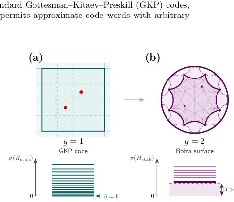
<figcaption class="paper-figure-caption"><b>Fig 1.</b> FIG. 1. Bosonic codes from compact phase spaces. Top: torus (g = 1, GKP code) and hyperbolic octagon (g = 2, Bolza surface) with red dots marking stellar zeros of represen- tative code states. Bottom: spectrum of the stabilizer Hamil- tonian ˆHstab. For g = 1 the surface group Z2 is amenable and the spectrum touches zero (δ = 0), permitting approx- imate code words. For g = 2 the surface group π1(Σ2) is non-amenable, opening a spectral gap (δ &gt; 0) that obstructs construction of normalizable exact stabilizer eigenstates.</figcaption>
</figure>
<figure class="paper-figure-card">
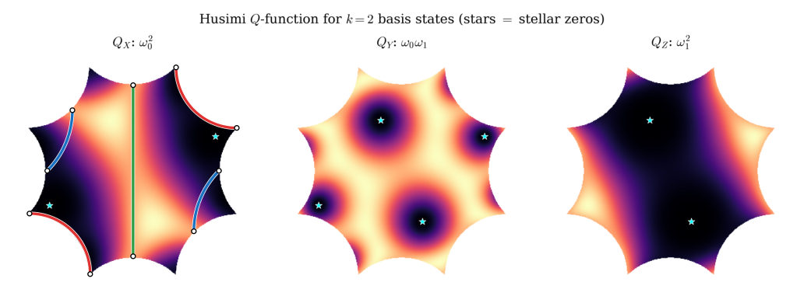
<figcaption class="paper-figure-caption"><b>Fig 2.</b> FIG. 2. Husimi Q-function for the k = 2 code space basis on the Bolza octagon. Every basis state has stellar rank deg Ω⊗2 C = 4. Left: Qω2 0 (2 double zeros). Center: Qω0ω1 (4 simple zeros). Right: Qω2 1 (2 double zeros). Stars mark zero locations; the octagonal fundamental domain tiles the Poincar´e disk under Γ. The three pants geodesics γR, γG, γB (red, green, blue) are overlaid on the left panel; γR runs along two identified edges of the octagon.</figcaption>
</figure>
<figure class="paper-figure-card">
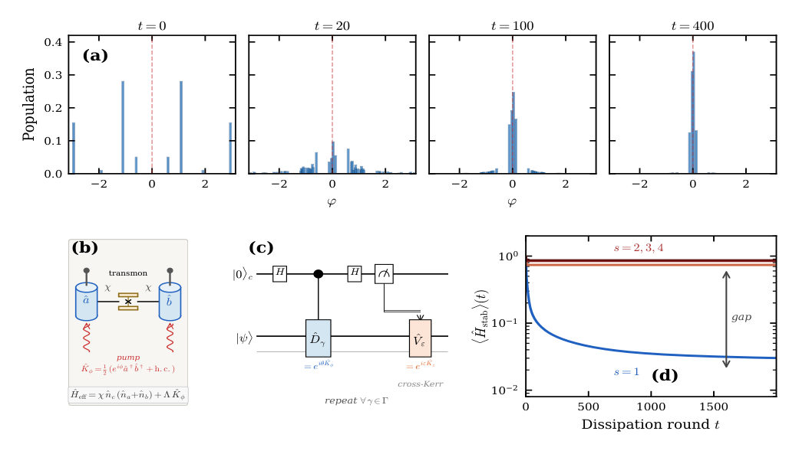
<figcaption class="paper-figure-caption"><b>Fig 3.</b> FIG. 3. (a) Single-generator conditional-kick protocol (k = 2, Bolza surface, Ntrunc = 60, ε = 0.5): population in the ˆDγ- eigenbasis at rounds t = 0, 20, 100, 400. The dashed line marks φ = 0 (target stabilizer phase); population concentrates there over successive rounds. (b) Circuit-QED module: two microwave cavities (ˆa, ˆb) dispersively coupled (χ) to a transmon ancilla, with a single parametric pump (Λ) driving correlated photon-pair creation (two-mode squeezing). The effective Hamiltonian ˆHeff = χ ˆnc(ˆna + ˆnb)+Λ ˆKϕ provides the native gate set. (c) One round of the conditional-kick channel: controlled ˆDγ = eiθ ˆ Kϕ</figcaption>
</figure>
</div>
<p><strong>Summary.</strong> This paper establishes a rigorous mathematical boundary for bosonic quantum error correction codes based on the geometry of their phase space. It proves that for surfaces of genus two or higher, the underlying group structure is non-amenable, which mathematically forces a spectral gap that prevents the existence of any stable, normalizable code state. This contrasts sharply with the well-understood case of the torus.</p>
<p><strong>Why it may be interesting.</strong> This work provides a deep geometric constraint on quantum error correction, showing that the topology of the underlying physical space (the Riemann surface) dictates the fundamental feasibility of encoding quantum information.</p>
<details>
<summary>Detailed structure</summary>
<p><strong>Main problem.</strong> The paper investigates the algebraic structure and existence of bosonic quantum error-correcting codes defined on compact Riemann surfaces of genus $g \geq 2$. The core problem is determining when such codes can support normalizable quantum states.</p>
<p><strong>Main result.</strong> A fundamental no-go theorem is proven: for genus $g \geq 2$, the non-amenability of the surface group forces a strictly positive spectral gap in the stabilizer Hamiltonian, precluding the existence of any normalizable code state.</p>
<p><strong>Method.</strong> The authors use tools from algebraic geometry (automorphic forms, Riemann-Roch theorem) combined with quantum information theory concepts like stabilizer codes and spectral gap analysis.</p>
<p><strong>Model / system.</strong> The system models bosonic quantum error correction on a phase space defined by a compact Riemann surface $\Sigma_g$. The code space is defined by states fixed by the action of the surface's fundamental group $\Gamma$.</p>
<p><strong>Key observables.</strong> Spectral Gap ($\delta$), Amenability of the stabilizer group ($\Gamma$), Dimension of the code space ($\dim H_\Gamma$).</p>
<p><strong>Important parameters / regimes.</strong> Genus ($g$), Stellar Rank ($r$), The structure of the surface group $\pi_1(\Sigma_g)$.</p>
<p><strong>Assumptions / limitations.</strong> The analysis relies on the uniformization theorem and the mathematical framework connecting quantum states to global sections of line bundles on the Riemann surface.</p>
<p><strong>Figures summary.</strong> Figures compare the spectral gap ($\delta$) for $g=1$ (Torus/GKP, $\delta=0$) versus $g=2$ (Bolza surface, $\delta>0$), illustrating the physical consequence of group amenability.</p>
<p><strong>Paper structure.</strong> The paper contrasts the known case of $g=1$ (amenable group, allowing approximate codes) with the general case $g \geq 2$. It develops the no-go theorem by linking the non-amenability of the surface group to a positive spectral gap, which mathematically forbids exact or approximate code states.</p>
</details>
<details>
<summary>Abstract</summary>
<p>We present the algebraic structure of bosonic quantum error-correcting codes on genus-two Riemann surfaces. We explicitly construct the code words as automorphic forms and analytically generate the full tower of code spaces at all weights. We prove a fundamental no-go theorem: for any genus greater than one, the stabilizer group is non-amenable, forcing a strictly positive spectral gap in the stabilizer Hamiltonian. Consequently, no normalizable quantum state can satisfy all stabilizer conditions. This sharply contrasts with standard Gottesman-Kitaev-Preskill (GKP) codes, where the amenability of the stabilizer group $\mathbb{Z}^2$ permits approximate code words with arbitrary precision.</p>
</details>
<p><sub><a href="#top">↑ back to top</a></sub></p>

<p><a id="paper-2608.30941"></a></p>
<h3 id="compensation-in-continuous-symmetric-trilayered-planar-ferrimagnet"><a href="http://arxiv.org/abs/2608.30941v1">Compensation in continuous symmetric trilayered planar ferrimagnet</a></h3>
<p><strong>Authors:</strong> Olivia Mallick, Muktish Acharyya<br>
<strong>Type:</strong> theory · <strong>Category:</strong> statistical mechanics · <strong>PDF:</strong> <a href="https://arxiv.org/pdf/2608.30941v1">https://arxiv.org/pdf/2608.30941v1</a><br>
<strong>Analysis basis:</strong> full PDF text, analyzed in chunks</p>
<div class="figure-strip-hint">↔ Scroll figures horizontally</div>
<div class="paper-figures-scroll">
<figure class="paper-figure-card">
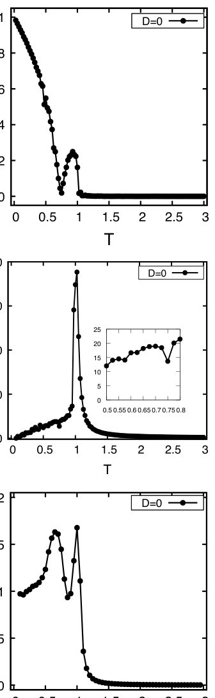
<figcaption class="paper-figure-caption"><b>Fig 1.</b> FIG. 1. (a) The total magnetisation (M) is plotted against temperature (T) for isotropic (D = 0)</figcaption>
</figure>
<figure class="paper-figure-card">
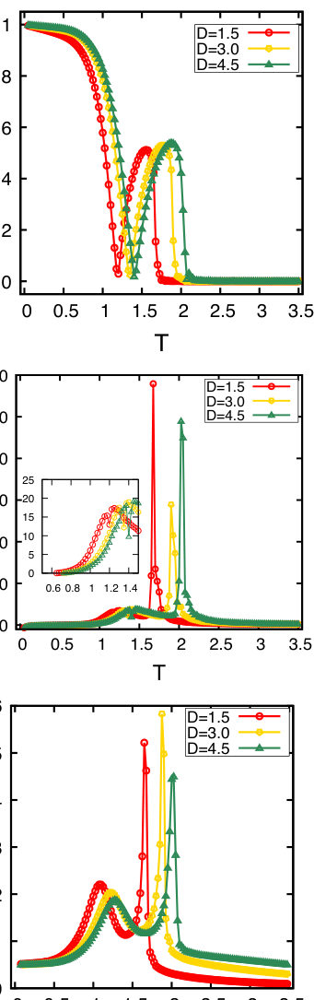
<figcaption class="paper-figure-caption"><b>Fig 2.</b> FIG. 2. (a) The total magnetisation (M) is plotted against temperature (T) for different anistropy</figcaption>
</figure>
<figure class="paper-figure-card">
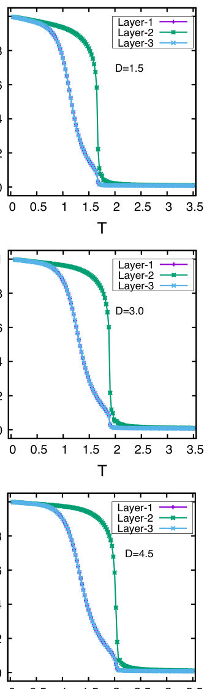
<figcaption class="paper-figure-caption"><b>Fig 3.</b> FIG. 3. The sublattice (individual layer) magnetisation m is plotted against temperature (T) for</figcaption>
</figure>
<figure class="paper-figure-card">
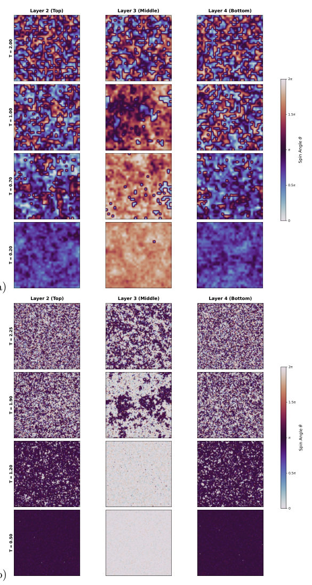
<figcaption class="paper-figure-caption"><b>Fig 4.</b> FIG. 4. Spin morphology for system size L = 32 at (a)isotropic regime (D = 0) and (b) anisotropic</figcaption>
</figure>
<figure class="paper-figure-card">
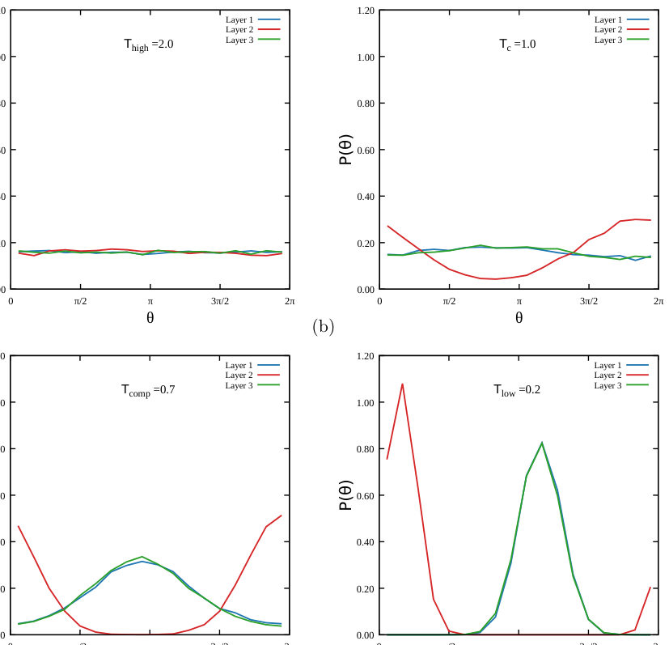
<figcaption class="paper-figure-caption"><b>Fig 5.</b> FIG. 5. The spin-angle probability distribution of three sublattices for four characteristic temper-</figcaption>
</figure>
</div>
<p><strong>Summary.</strong> This work uses Monte Carlo simulations to study a trilayered anisotropic XY ferrimagnet, focusing on two distinct temperature regimes: a critical transition ($T_c$) and a compensation point ($T_{comp}$). The research confirms that the system exhibits compensation—where net magnetization vanishes despite ordered sublattices—and demonstrates that increasing anisotropy stabilizes both transitions.</p>
<p><strong>Why it may be interesting.</strong> The study provides detailed numerical evidence of compensation phenomena in a continuous spin model, offering insights into magnetic ordering mechanisms beyond simple mean-field treatments, which is relevant for understanding complex magnetic phase diagrams.</p>
<details>
<summary>Detailed structure</summary>
<p><strong>Main problem.</strong> The study investigates the compensation behavior in a trilayered anisotropic XY magnetic system, where the total magnetization vanishes even if the individual magnetic sublattices remain ordered.</p>
<p><strong>Main result.</strong> The system exhibits distinct high-temperature critical behavior ($T_c$) and low-temperature compensation behavior ($T_{comp}$), both of which increase with the single-site anisotropy parameter $D$.</p>
<p><strong>Method.</strong> Monte Carlo simulations using the Metropolis algorithm with random single-spin updates were employed to calculate thermodynamic properties.</p>
<p><strong>Model / system.</strong> The model is a trilayered (A-B-A type) anisotropic XY magnetic system featuring intra-plane ferromagnetic and inter-plane antiferromagnetic interactions, described by a Hamiltonian including a single-site anisotropy term $D$.</p>
<p><strong>Key observables.</strong> Total magnetization ($M$), magnetic susceptibility ($\chi$), specific heat ($C$), and sublattice magnetizations ($m_k$).</p>
<p><strong>Important parameters / regimes.</strong> Single-site anisotropy ($D$), temperature ($T$), and system size ($L$).</p>
<p><strong>Assumptions / limitations.</strong> The analysis distinguishes between the thermodynamic phase transition at $T_c$ and the compensation point at $T_{comp}$, noting that the latter does not show conventional critical scaling with system size.</p>
<p><strong>Figures summary.</strong> Figures illustrate $M(T)$, $\chi(T)$, and $C(T)$ for varying anisotropy $D$ and system sizes $L$, showing characteristic peaks/dips at both $T_c$ and $T_{comp}$.</p>
<p><strong>Paper structure.</strong> The paper systematically analyzes the magnetic response by varying anisotropy ($D$) and system size ($L$), confirming the existence of two distinct temperature regimes: a critical transition and a compensation point, and comparing these findings across different simulation parameters.</p>
</details>
<details>
<summary>Abstract</summary>
<p>The trilayered (A-B-A type) anisotropic (single site) XY magnetic model is considered with the intra-plane ferromagnetic and   the inter-plane antiferromagnetic interactions. The equilibrium properties of such trilayered anisotropic XY system has been studied by   Monte Carlo simulation with Metropolis single spin (randomly chosen) update algorithm. In a given range of interaction parameters, the system has been found to exhibit the high temperature {\it critical} (vanishing sublattice magnetisations and total magnetisation) and low temperature {\it compensation} (vanishing total magnetisation even for non-vanishing sublattice magnetisations) behaviours. The compensation temperature and the critical temperature both are found to increase with the increase of single site anisotropy. The comprehensive phase diagram is drawn. The finite size study reveals the growth of correlations near the critical temperature.</p>
</details>
<p><sub><a href="#top">↑ back to top</a></sub></p>

<p><a id="paper-2608.30937"></a></p>
<h3 id="constrained-minimax-approximation-for-quantum-signal-processing"><a href="http://arxiv.org/abs/2608.30937v1">Constrained minimax approximation for quantum signal processing</a></h3>
<p><strong>Authors:</strong> Yulong Dong, James B. Larsen, Lin Lin, Rahul Sarkar<br>
<strong>Type:</strong> theory · <strong>Category:</strong> quantum information and computing · <strong>PDF:</strong> <a href="https://arxiv.org/pdf/2608.30937v1">https://arxiv.org/pdf/2608.30937v1</a><br>
<strong>Analysis basis:</strong> full PDF text, analyzed in chunks</p>
<div class="figure-strip-hint">↔ Scroll figures horizontally</div>
<div class="paper-figures-scroll">
<figure class="paper-figure-card">
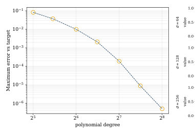
<figcaption class="paper-figure-caption"><b>Fig 1.</b> Fig. 2: Performance of the Remez and active-set based method for gTP.</figcaption>
</figure>
<figure class="paper-figure-card">
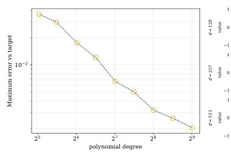
<figcaption class="paper-figure-caption"><b>Fig 2.</b> Fig. 3: Performance of the Remez and active-set based method for gMI.</figcaption>
</figure>
<figure class="paper-figure-card">
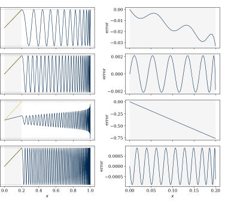
<figcaption class="paper-figure-caption"><b>Fig 3.</b> Fig. 4: Performance of the Remez and active-set based method for gSV.</figcaption>
</figure>
<figure class="paper-figure-card">
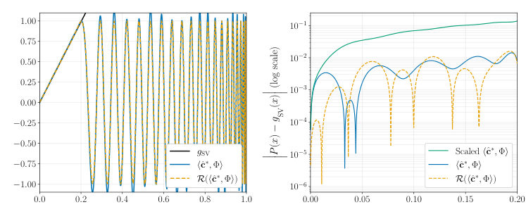
<figcaption class="paper-figure-caption"><b>Fig 4.</b> Fig. 5: Illustration of nonlinear Fourier retraction for the uniform singular value amplification example (target function gSV). The polynomial ⟨ˆc∗, Φ⟩is the solution</figcaption>
</figure>
<figure class="paper-figure-card">
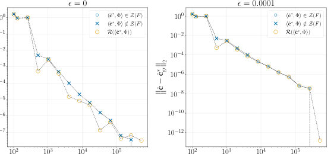
<figcaption class="paper-figure-caption"><b>Fig 5.</b> Fig. 6: Convergence of the retraction method for the target function (1 −ϵ)gSV for</figcaption>
</figure>
</div>
<p><strong>Summary.</strong> This paper tackles the mathematical challenge of constrained minimax approximation within Quantum Signal Processing (QSP). It develops and validates a nonlinear Fourier retraction technique to ensure that polynomial approximations, derived from solving large semi-infinite programs, remain physically feasible (i.e., bounded by one) while minimizing error. This provides a powerful, reliable workflow for designing practical quantum circuits.</p>
<p><strong>Why it may be interesting.</strong> The work provides a robust mathematical tool for designing quantum circuits based on function approximation, which is crucial for implementing complex quantum gates or transformations in quantum computing architectures.</p>
<details>
<summary>Detailed structure</summary>
<p><strong>Main problem.</strong> The paper addresses the constrained minimax approximation problem arising in Quantum Signal Processing (QSP), which requires finding a polynomial approximation that remains bounded by one on the domain while minimizing approximation error.</p>
<p><strong>Main result.</strong> The authors introduce a nonlinear Fourier retraction method that successfully converts nearly feasible polynomial approximations into strictly feasible ones, maintaining high approximation accuracy even in challenging regimes.</p>
<p><strong>Method.</strong> The approach combines solving a Linear Semi-Infinite Program (LSIP) via discretization (LP) with a novel nonlinear Fourier retraction technique to enforce boundary constraints.</p>
<p><strong>Model / system.</strong> The context is Quantum Signal Processing (QSP), where polynomial transformations are implemented using quantum circuits. The approximation is formulated using Chebyshev polynomials ($\Phi(x)$) to construct an $   ext{SU}(2)$ valued QSP protocol.</p>
<p><strong>Key observables.</strong> Approximation error ($\lVert P - g 
Vert_Y$), constraint violation ($\lVert \langle \hat{c}^*, \Phi 
angle 
Vert_X - 1$), and the convergence of the retraction method.</p>
<p><strong>Important parameters / regimes.</strong> The degree of the polynomial ($d$), the size of the discretization sets ($|\hat{X}|, |\hat{Y}|$), and the regime of approximation (e.g., fully-coherent regime).</p>
<p><strong>Assumptions / limitations.</strong> The primary difficulty addressed is that feasibility at finite sample points does not guarantee feasibility on the entire domain, especially when the optimal approximant hits the boundary.</p>
<p><strong>Figures summary.</strong> Figures demonstrate the comparison between the optimal (but potentially infeasible) solution and the retracted solution, showing the retraction method maintains accuracy and enforces feasibility, particularly for the threshold projector ($g_{TP}$).</p>
<p><strong>Paper structure.</strong> The paper first defines the constrained minimax problem in QSP, analyzes initial discretization methods (Remez exchange), and then introduces and rigorously tests the nonlinear Fourier retraction method, demonstrating its superior performance over standard techniques.</p>
</details>
<details>
<summary>Abstract</summary>
<p>Quantum signal processing (QSP) provides a simple and efficient framework for implementing polynomial transformations using quantum circuits. Its classical design stage leads to a constrained minimax approximation problem: find a polynomial of prescribed parity that approximates a target function uniformly on a fitting set while remaining bounded in magnitude by one on the domain $[0,1]$, which can be viewed as a semi-infinite constraint. Discretization converts the problem into a linear program, but feasibility at a set of finitely many sampled points does not ensure feasibility on the whole domain, especially when an optimal approximant reaches the boundary of the feasible set. We investigate two approaches to address this difficulty. A Remez exchange method combined with active-set constraint enforcement is efficient on many tested instances, but its stability depends on the target and problem geometry. We then introduce nonlinear Fourier retraction, which uses QSP completion and phase synthesis to turn a nearly feasible polynomial into phase factors for a feasible QSP polynomial without increasing the degree. Across representative problems, retraction largely preserves approximation accuracy and remains effective on instances where the Remez heuristic is unstable. The resulting workflow connects classical minimax approximation and semi-infinite optimization with nonlinear Fourier analysis, and is implemented in the qsppack software package.</p>
</details>
<p><sub><a href="#top">↑ back to top</a></sub></p>

<p><a id="paper-2608.29407"></a></p>
<h3 id="controlling-intertwined-electronic-orders-in-fese-with-exfoliation"><a href="http://arxiv.org/abs/2608.29407v1">Controlling Intertwined Electronic Orders in FeSe with Exfoliation</a></h3>
<p><strong>Authors:</strong> Wenyao Liu, Gabriel Natale, Kyung-Mo Kim, Birender Singh, Piyush Sakrikar, Stephen D. Funni, Leo Kondo, Augustin Davignon, Antoine de Lagrave, Kota Ishihara, Michael Geiwitz, Maia G. Vergniory, Takasada Shibauchi, Jun Sung Kim, Michał Papaj, Judy J. Cha, Kenneth S. Burch†<br>
<strong>Type:</strong> both · <strong>Category:</strong> strongly correlated electrons · <strong>PDF:</strong> <a href="https://arxiv.org/pdf/2608.29407v1">https://arxiv.org/pdf/2608.29407v1</a><br>
<strong>Analysis basis:</strong> full PDF text, analyzed in chunks</p>
<div class="figure-strip-hint">↔ Scroll figures horizontally</div>
<div class="paper-figures-scroll">
<figure class="paper-figure-card">
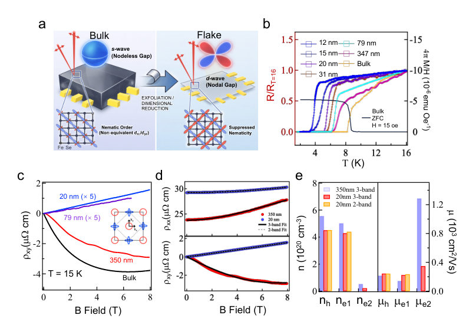
<figcaption class="paper-figure-caption"><b>Fig 1.</b> Fig. 1. Exfoliated FeSe to thin flakes. a, Switching intertwined order in FeSe through exfo-</figcaption>
</figure>
<figure class="paper-figure-card">
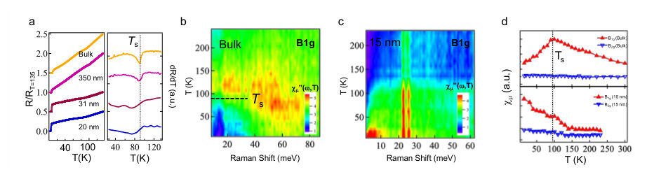
<figcaption class="paper-figure-caption"><b>Fig 2.</b> Fig. 2. Nematicity in bulk and thin FeSe a, Temperature dependence of the normalized</figcaption>
</figure>
<figure class="paper-figure-card">
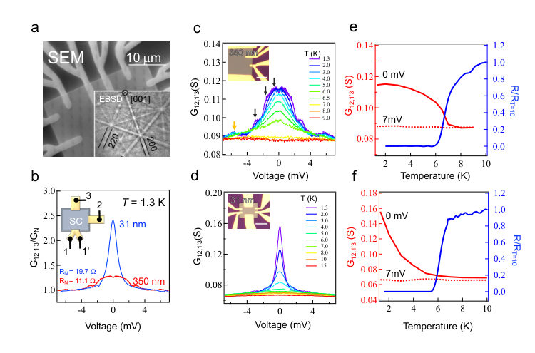
<figcaption class="paper-figure-caption"><b>Fig 3.</b> Fig. 3. Superconducting spectra changing upon exfoliation a, SEM image of the FeSe de-</figcaption>
</figure>
<figure class="paper-figure-card">
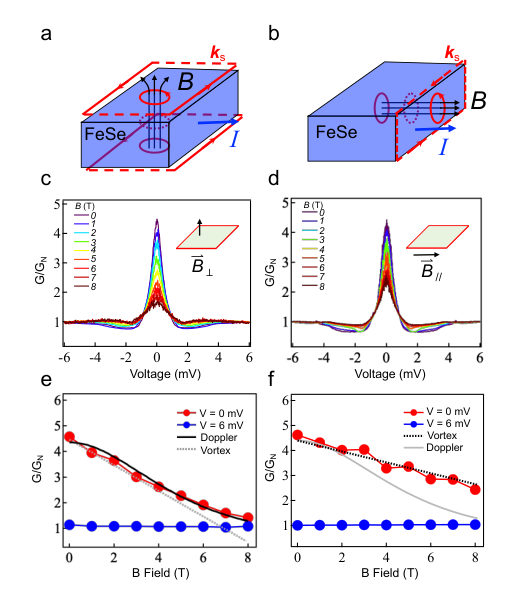
<figcaption class="paper-figure-caption"><b>Fig 4.</b> Fig. 4. Response to an external magnetic field. Schematics of applying external magnetic</figcaption>
</figure>
<figure class="paper-figure-card">
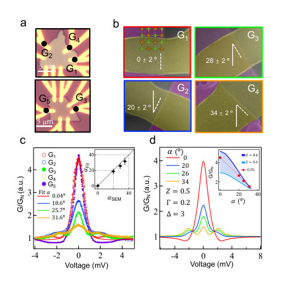
<figcaption class="paper-figure-caption"><b>Fig 5.</b> Fig. 5. Symmetry of sOP in thin flake a, Optical image of two 20 nm-thickness FeSe de-</figcaption>
</figure>
</div>
<p><strong>Summary.</strong> This work demonstrates that physically thinning the superconductor FeSe via exfoliation acts as a powerful tool to manipulate its electronic state. Experimentally, this process suppresses the bulk nematic order and spectroscopically confirms a symmetry switch in the superconducting pairing from s-wave to d-wave-dominant. This establishes FeSe thin flakes as a versatile platform for engineering quantum superconducting orders.</p>
<p><strong>Why it may be interesting.</strong> The ability to tune superconducting pairing symmetry using purely structural/dimensional control (exfoliation) is highly relevant to understanding emergent quantum states in strongly correlated materials, providing a clean platform for studying pairing mechanisms.</p>
<details>
<summary>Detailed structure</summary>
<p><strong>Main problem.</strong> The study investigates how controlling the electronic structure via exfoliation can tune the competing electronic orders (nematic and superconducting) in the unconventional superconductor FeSe.</p>
<p><strong>Main result.</strong> Exfoliation suppresses the bulk electronic nematic response and fundamentally switches the superconducting symmetry from bulk s-wave to a d-wave-dominant pairing state.</p>
<p><strong>Method.</strong> The research employs a combination of experimental techniques, including angle-dependent Andreev reflection spectroscopy, Raman scattering, and transport measurements, complemented by theoretical modeling using the 2D-BTK model.</p>
<p><strong>Model / system.</strong> The physical system is Iron Selenide (FeSe), an unconventional superconductor. The theoretical framework involves modeling the superconducting order parameter (sOP) symmetry, often using extensions of the 2D-BTK model to account for $s+d$-wave pairing.</p>
<p><strong>Key observables.</strong> Superconducting symmetry (s-wave vs. d-wave), nematic order strength (probed by Raman response), superconducting gap size ($\Delta$), and critical temperature ($T_c$).</p>
<p><strong>Important parameters / regimes.</strong> Flake thickness (dimensional reduction), magnetic field ($B$), temperature ($T$), and the nematic interaction strength ($g_{nem}$).</p>
<p><strong>Assumptions / limitations.</strong> The analysis assumes that exfoliation provides a clean tuning knob for electronic orders, and that Andreev reflection measurements can be accurately modeled using the 2D-BTK formalism.</p>
<p><strong>Figures summary.</strong> Figures illustrate the suppression of nematic signatures in thin flakes via Raman maps, the transition from coherence peaks to Zero-Bias Conductance Peaks (ZBCP) in ARS spectra, and the thickness dependence of superconducting gap components.</p>
<p><strong>Paper structure.</strong> The paper progresses by first establishing the problem of controlling intertwined orders, then presenting evidence from transport and Raman spectroscopy showing nematic suppression upon exfoliation, followed by definitive proof of symmetry switching using angle-dependent Andreev reflection spectroscopy, and concluding with theoretical modeling of the resulting pairing symmetry.</p>
</details>
<details>
<summary>Abstract</summary>
<p>Controlling intertwined electronic orders in two-dimensional superconductors offers an effective route to answering fundamental questions and engineering new quantum devices. However, tuning the balance between competing orders typically requires complex chemistry, strain, or interface engineering. Here, we show that a pristine alternative is the dimensional reduction of the unconventional superconductor FeSe. Exfoliation suppresses the bulk electronic nematic response and switches the superconducting symmetry from bulk s-wave to d-wave-dominant. Transport, electron microscopy, and Raman spectroscopy establish the substantial weakening of nematic order in thin flakes. To probe superconductivity, we perform angle-dependent Andreev reflection spectroscopy on pristine crystal edges. As the junction's orientation is rotated, the spectra evolve from zero-energy bound states to coherence peaks. The injection angle, field, and temperature dependence, along with theoretical modeling, confirm that exfoliation switches the superconducting symmetry. Our results suggest a versatile superconducting platform for engineering quantum orders and provide fresh insights into the underlying pairing mechanisms.</p>
</details>
<p><sub><a href="#top">↑ back to top</a></sub></p>

<p><a id="paper-2608.30421"></a></p>
<h3 id="dq-tds-for-infinitesimal-irreversible-processes-on-the-differential-form-of-the-clausius-inequality"><a href="http://arxiv.org/abs/2608.30421v1">d'Q = TdS for Infinitesimal Irreversible Processes: On the Differential Form of the Clausius Inequality</a></h3>
<p><strong>Authors:</strong> Hiroshi Shimahara<br>
<strong>Type:</strong> theory · <strong>Category:</strong> statistical mechanics · <strong>PDF:</strong> <a href="https://arxiv.org/pdf/2608.30421v1">https://arxiv.org/pdf/2608.30421v1</a><br>
<strong>Analysis basis:</strong> full PDF text, analyzed in chunks</p>
<div class="figure-strip-hint">↔ Scroll figures horizontally</div>
<div class="paper-figures-scroll">
<figure class="paper-figure-card">
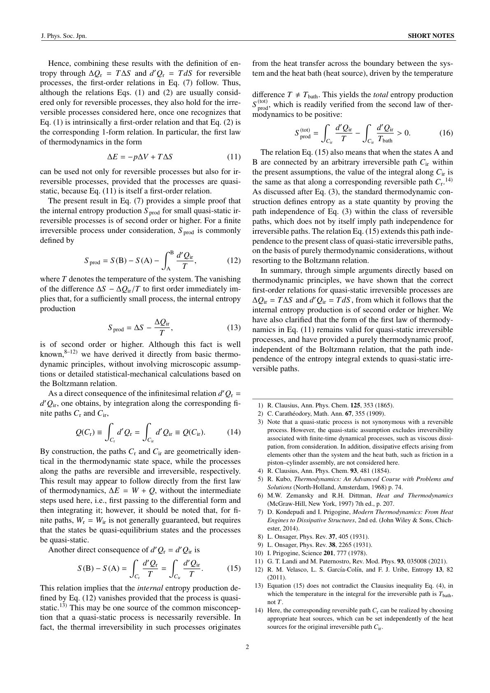
<figcaption class="paper-figure-caption"><b>Fig 1.</b> Low-resolution page preview, page 2</figcaption>
</figure>
</div>
<p><strong>Summary.</strong> This paper re-examines the Clausius inequality for infinitesimal irreversible processes, arguing that the correct first-order relationship is an equality, $d'Q = TdS$. This result demonstrates that entropy remains a well-defined state function even when considering quasi-static irreversible paths, providing a purely thermodynamic proof that internal entropy production is of a higher order than first order.</p>
<p><strong>Why it may be interesting.</strong> While focused on classical thermodynamics, establishing the path independence of entropy for quasi-static irreversible paths using purely thermodynamic arguments provides a rigorous foundation relevant to defining entropy in non-equilibrium quantum systems.</p>
<details>
<summary>Detailed structure</summary>
<p><strong>Main problem.</strong> The paper addresses the conventional understanding of the Clausius inequality for infinitesimal irreversible processes, specifically challenging the strict inequality $d'Q < TdS$.</p>
<p><strong>Main result.</strong> The correct first-order differential form for quasi-static irreversible processes is shown to be the equality $d'Q = TdS$, which implies that internal entropy production is of second order or higher.</p>
<p><strong>Method.</strong> The analysis uses purely thermodynamic arguments, starting from the First Law of Thermodynamics and applying first-order approximations to the inexact differential of heat ($d'Q$) and the exact differential of entropy ($dS$).</p>
<p><strong>Model / system.</strong> The study considers general thermodynamic processes, differentiating between reversible and irreversible paths under the assumption of quasi-static conditions.</p>
<p><strong>Key observables.</strong> Inexact differential of heat ($d'Q$), exact differential of entropy ($dS$), and internal entropy production ($S_{prod}$).</p>
<p><strong>Important parameters / regimes.</strong> Temperature ($T$) and the assumption of quasi-static processes.</p>
<p><strong>Assumptions / limitations.</strong> The analysis is strictly limited to quasi-static processes, and the derivation relies on first-order approximations for small temperature variations.</p>
<p><strong>Paper structure.</strong> The paper builds the argument by comparing the heat exchange and entropy change for reversible and irreversible processes, deriving the equality $d'Q = TdS$ for quasi-static paths, and concluding that entropy remains a well-defined state function even for irreversible paths.</p>
</details>
<details>
<summary>Abstract</summary>
<p>Conventionally, the differential form of the Clausius inequality is adopted for infinitesimal irreversible processes. We show that the correct first-order form for infinitesimal quasi-static irreversible processes is the equality d'Q=TdS rather than d'Q &lt; TdS. This provides a purely thermodynamic proof that internal entropy production is second-order or higher and confirms that entropy remains a well-defined state quantity even when quasi-static irreversible processes are included, without resorting to the Boltzmann relation.</p>
</details>
<p><sub><a href="#top">↑ back to top</a></sub></p>

<p><a id="paper-2608.31081"></a></p>
<h3 id="deterministic-minimum-output-entropy-nonadditivity-via-haagerups-inequality-and-near-free-permutation-representations"><a href="http://arxiv.org/abs/2608.31081v1">Deterministic Minimum-Output-Entropy Nonadditivity via Haagerup's Inequality and Near-Free Permutation Representations</a></h3>
<p><strong>Authors:</strong> Guocheng Zhen, Chengkai Zhu, Ranyiliu Chen, Xin Wang<br>
<strong>Type:</strong> theory · <strong>Category:</strong> quantum information and computing · <strong>PDF:</strong> <a href="https://arxiv.org/pdf/2608.31081v1">https://arxiv.org/pdf/2608.31081v1</a><br>
<strong>Analysis basis:</strong> full PDF text, analyzed in chunks</p>
<div class="figure-strip-hint">↔ Scroll figures horizontally</div>
<div class="paper-figures-scroll">
<figure class="paper-figure-card">
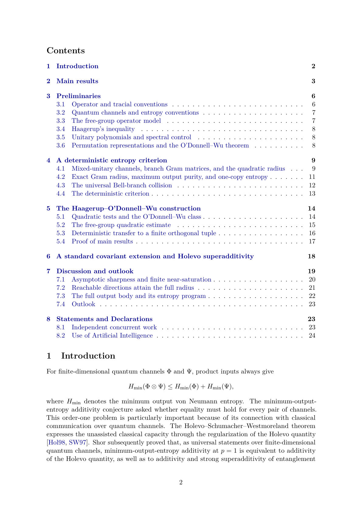
<figcaption class="paper-figure-caption"><b>Fig 1.</b> Low-resolution page preview, page 2</figcaption>
</figure>
<figure class="paper-figure-card">
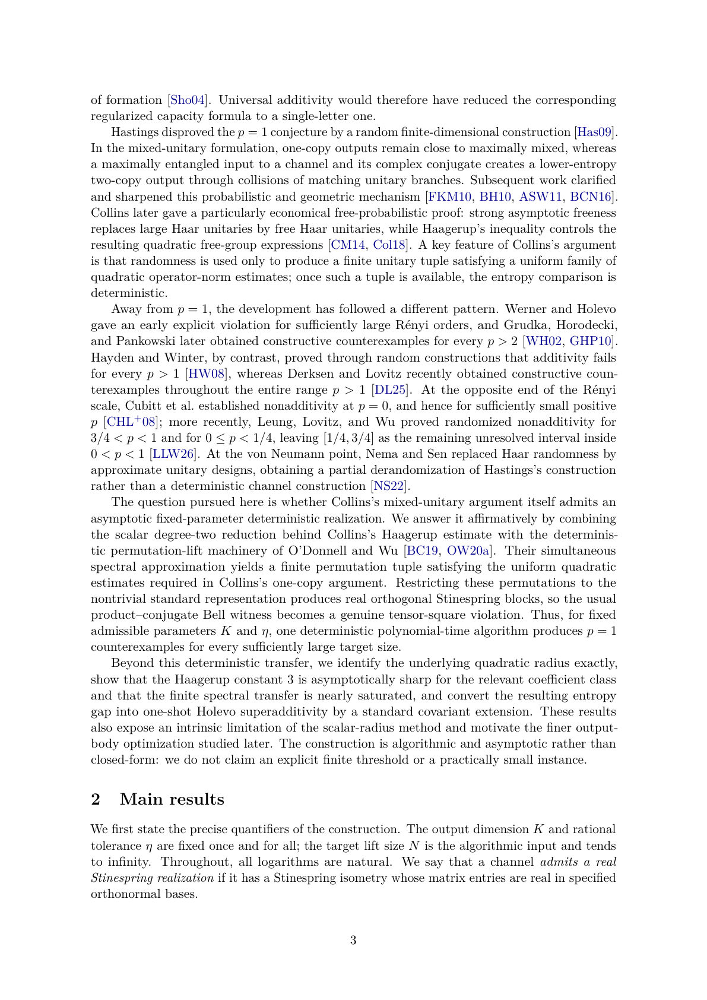
<figcaption class="paper-figure-caption"><b>Fig 2.</b> Low-resolution page preview, page 3</figcaption>
</figure>
<figure class="paper-figure-card">
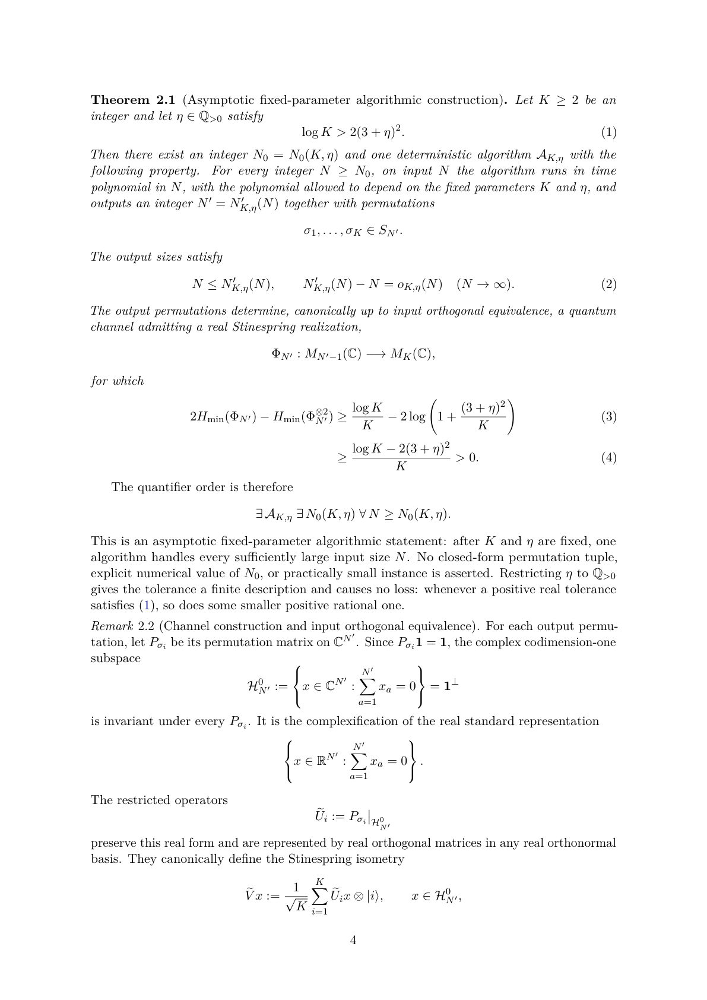
<figcaption class="paper-figure-caption"><b>Fig 3.</b> Low-resolution page preview, page 4</figcaption>
</figure>
<figure class="paper-figure-card">
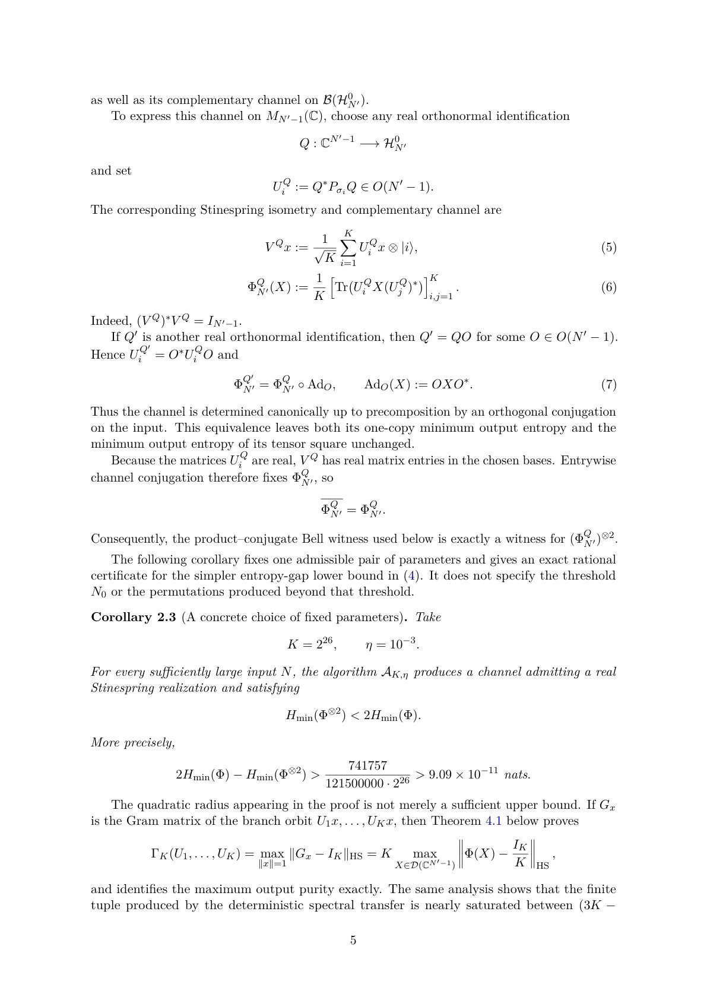
<figcaption class="paper-figure-caption"><b>Fig 4.</b> Low-resolution page preview, page 5</figcaption>
</figure>
<figure class="paper-figure-card">
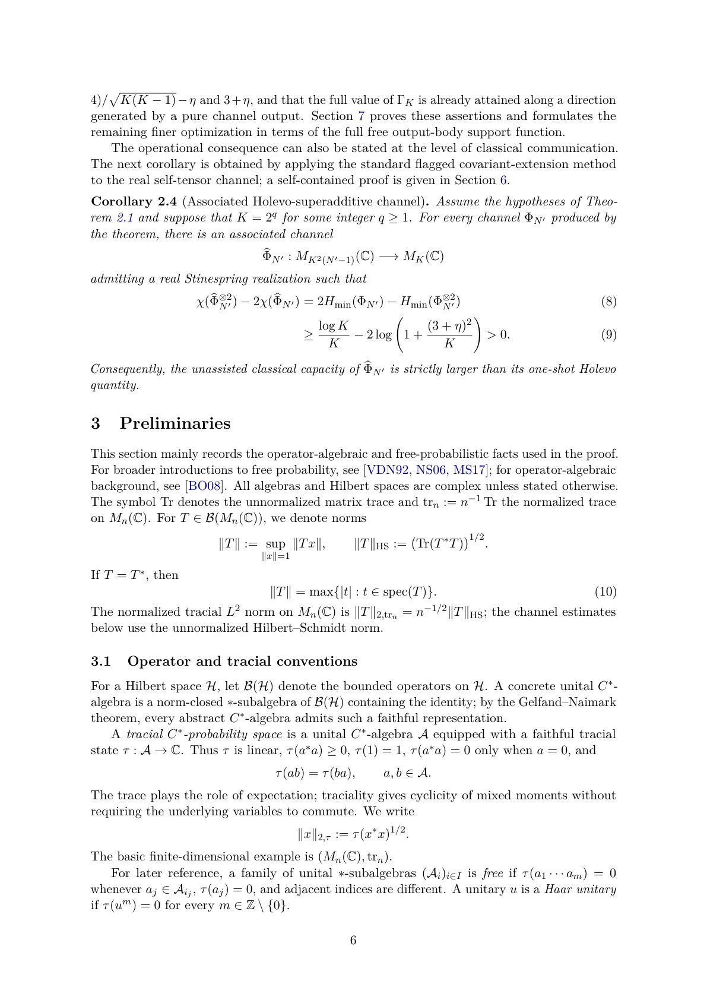
<figcaption class="paper-figure-caption"><b>Fig 5.</b> Low-resolution page preview, page 6</figcaption>
</figure>
</div>
<p><strong>Summary.</strong> This work provides a deterministic, polynomial-time construction demonstrating the nonadditivity of minimum-output-entropy for quantum channels. By combining advanced inequalities like Haagerup's with spectral approximation techniques, the authors establish a positive entropy gap. This result is significant because it provides a rigorous, constructive proof that translates directly into superadditivity for the one-shot Holevo quantity.</p>
<p><strong>Why it may be interesting.</strong> It provides a concrete, deterministic, and algorithmic proof of a fundamental non-additivity property in quantum information theory, advancing the understanding of channel capacity beyond simple random constructions.</p>
<details>
<summary>Detailed structure</summary>
<p><strong>Main problem.</strong> The paper addresses the deterministic realization of the quadratic certificate proving the nonadditivity of the minimum-output-entropy for quantum channels.</p>
<p><strong>Main result.</strong> It constructs a deterministic, polynomial-time algorithm yielding a specific entropy gap for the channel, which is shown to translate exactly into superadditivity for the one-shot Holevo quantity.</p>
<p><strong>Method.</strong> The construction combines Haagerup's length-two inequality with the deterministic spectral approximation of O'Donnell and Wu, applied to channels realized via real orthogonal Stinespring blocks.</p>
<p><strong>Model / system.</strong> The system analyzed is a quantum channel $\Phi_{N'}:M_{N'-1}(\mathbb{C})	o M_K(\mathbb{C})$, whose properties are governed by its minimum-output-entropy ($H_{\min}$).</p>
<p><strong>Key observables.</strong> Minimum output entropy ($H_{\min}$), the entropy gap $2H_{\min}(\Phi_{N'}) - H_{\min}(\Phi_{N'}^{\otimes 2})$, and the one-shot Holevo quantity ($\chi$).</p>
<p><strong>Important parameters / regimes.</strong> Fixed integer $K \ge 2$, rational tolerance $\eta > 0$, and the asymptotic input size $N$.</p>
<p><strong>Assumptions / limitations.</strong> The construction is algorithmic and asymptotic, relying on the existence of a real Stinespring realization for the channels.</p>
<p><strong>Paper structure.</strong> The paper develops the deterministic construction, proves the entropy gap inequality using spectral approximation, and concludes by showing the equivalence of this gap to superadditivity for the Holevo quantity.</p>
</details>
<details>
<summary>Abstract</summary>
<p>We give a deterministic realization of the finite-dimensional quadratic certificate underlying Collins's mixed-unitary proof of minimum-output-entropy nonadditivity. For every fixed integer $K\ge 2$ and rational $η>0$ satisfying $\log K>2(3+η)^2$, a deterministic polynomial-time algorithm, for every sufficiently large target size $N$, outputs $K$ permutations on $N'=N+o_{K,η}(N)$ points. Restricting their permutation matrices to the nontrivial standard representation yields real orthogonal Stinespring blocks and a channel $Φ_{N'}:M_{N'-1}(\mathbb{C})\to M_K(\mathbb{C})$ such that \[ 2H_{\min}(Φ_{N'}) -H_{\min}(Φ_{N'}^{\otimes 2}) \ge \frac{\log K}{K} -2\log\left(1+\frac{(3+η)^2}{K}\right) >0. \] The construction combines Haagerup's length-two inequality with the simultaneous deterministic spectral approximation of O'Donnell and Wu. We further show that the constant $3$ is asymptotically sharp on the relevant Hermitian zero-diagonal coefficient class and that the finite spectral transfer is nearly saturated, thereby isolating the finer geometry of the full output body as the natural next level of refinement beyond the scalar-radius method. Finally, a standard covariant extension converts the same deterministic entropy gap exactly into self-tensor superadditivity of the one-shot Holevo quantity.</p>
</details>
<p><sub><a href="#top">↑ back to top</a></sub></p>

<p><a id="paper-2608.29049"></a></p>
<h3 id="eigenvalues-of-multipartite-entanglement-witnesses"><a href="http://arxiv.org/abs/2608.29049v1">Eigenvalues of multipartite entanglement witnesses</a></h3>
<p><strong>Authors:</strong> Nalan Wang, Lin Chen<br>
<strong>Type:</strong> theory · <strong>Category:</strong> quantum information and computing · <strong>PDF:</strong> <a href="https://arxiv.org/pdf/2608.29049v1">https://arxiv.org/pdf/2608.29049v1</a><br>
<strong>Analysis basis:</strong> full PDF text, analyzed in chunks</p>
<div class="figure-strip-hint">↔ Scroll figures horizontally</div>
<div class="paper-figures-scroll">
<figure class="paper-figure-card">
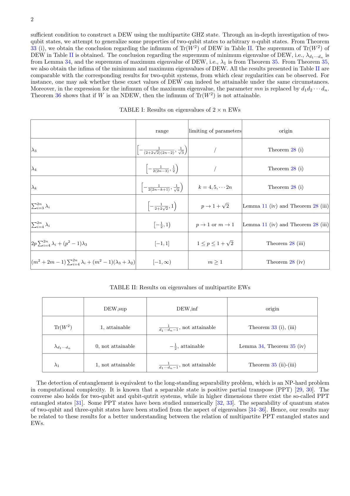
<figcaption class="paper-figure-caption"><b>Fig 1.</b> Low-resolution page preview, page 2</figcaption>
</figure>
<figure class="paper-figure-card">
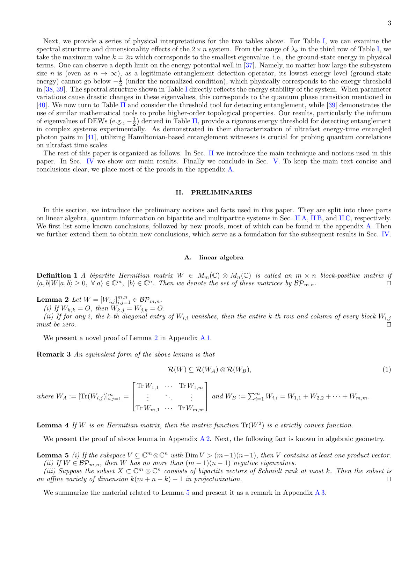
<figcaption class="paper-figure-caption"><b>Fig 2.</b> Low-resolution page preview, page 3</figcaption>
</figure>
<figure class="paper-figure-card">
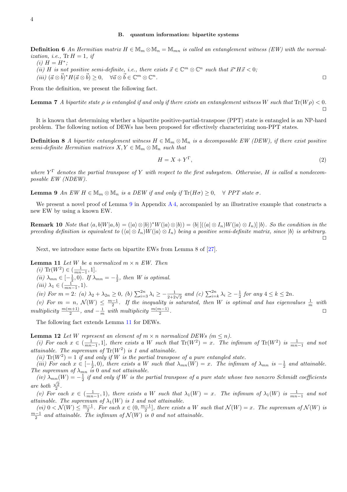
<figcaption class="paper-figure-caption"><b>Fig 3.</b> Low-resolution page preview, page 4</figcaption>
</figure>
<figure class="paper-figure-card">
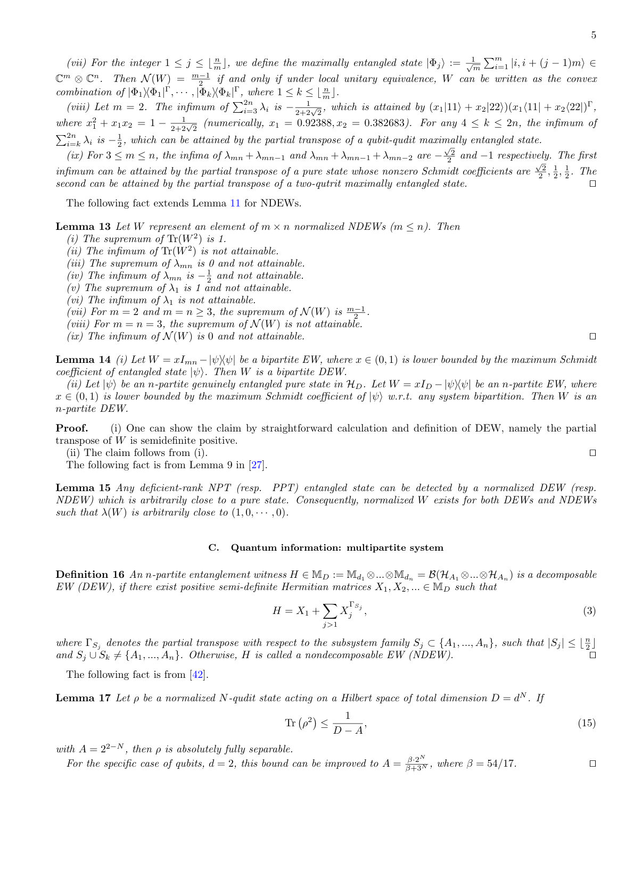
<figcaption class="paper-figure-caption"><b>Fig 4.</b> Low-resolution page preview, page 5</figcaption>
</figure>
<figure class="paper-figure-card">
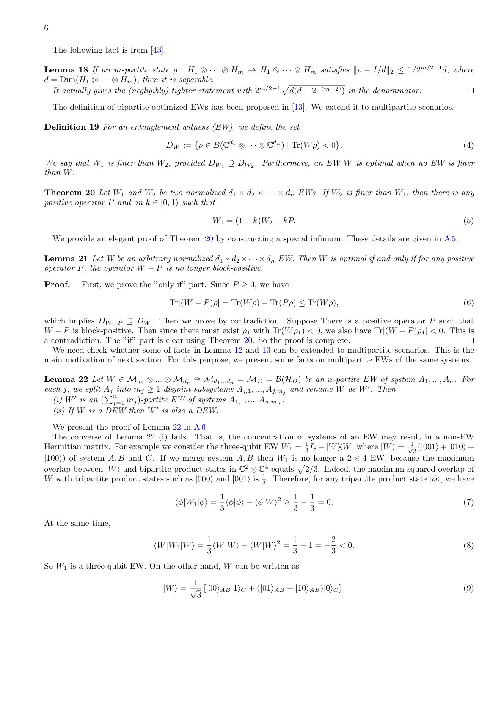
<figcaption class="paper-figure-caption"><b>Fig 5.</b> Low-resolution page preview, page 6</figcaption>
</figure>
</div>
<p><strong>Summary.</strong> This paper mathematically characterizes entanglement witnesses (EWs) in multipartite quantum systems, distinguishing between decomposable and non-decomposable types. It derives necessary and sufficient conditions and establishes precise bounds on the eigenvalues and spectral properties of these witnesses. This work provides rigorous tools for quantifying entanglement detection in complex quantum states.</p>
<p><strong>Why it may be interesting.</strong> The rigorous mathematical characterization of entanglement witnesses provides concrete, quantifiable thresholds for detecting entanglement in complex, multi-partite quantum states, which is fundamental to quantum information theory.</p>
<details>
<summary>Detailed structure</summary>
<p><strong>Main problem.</strong> The paper investigates the mathematical properties of entanglement witnesses (EWs) in multipartite quantum systems, specifically classifying them as decomposable (DEWs) or non-decomposable (NDEW).</p>
<p><strong>Main result.</strong> The authors provide necessary and sufficient conditions for constructing special DEWs using the GHZ state and explicitly characterize the bounds (supremum/infimum) for key spectral properties like eigenvalues and the trace of the square of the witness.</p>
<p><strong>Method.</strong> The analysis relies heavily on linear algebra, decomposing the EW operator into blocks based on subspace splittings, and deriving rigorous inequalities for the eigenvalues.</p>
<p><strong>Model / system.</strong> The focus is on multipartite quantum systems (up to n-qubit systems) and the mathematical tools used to detect entanglement, represented by the entanglement witness operator W.</p>
<p><strong>Key observables.</strong> Eigenvalues of the EW ($\lambda_k$), the trace of the square of the witness ($    ext{Tr}(W^2)$), and the expectation value $ ext{Tr}(W
ho)$ used for entanglement detection.</p>
<p><strong>Important parameters / regimes.</strong> The dimensionality of the system ($n$-qubits) and the specific structure of the witness (e.g., $2 	imes n$ EWs).</p>
<p><strong>Assumptions / limitations.</strong> The analysis builds upon the definitions of DEWs and NDEWs, and in some sections, assumes the existence of a genuine 2 $ imes$ n EW to constrain the operator structure.</p>
<p><strong>Figures summary.</strong> Table I summarizes eigenvalue ranges for $2 	imes n$ EWs, while Table II summarizes bounds for DEWs and NDEWs regarding $ ext{Tr}(W^2)$ and specific eigenvalues.</p>
<p><strong>Paper structure.</strong> The paper progresses from general properties of block-positive operators to specific characterizations of DEWs and NDEWs, culminating in detailed eigenvalue results for $2 	imes n$ systems and general multipartite systems.</p>
</details>
<details>
<summary>Abstract</summary>
<p>We investigate various properties of multipartite block-positive operators, decomposable EWs (DEWs), and non-decomposable EWs. We provide a necessary and sufficient condition to construct a special DEW using the multipartite GHZ state. For multipartite DEW, we explicitly characterize the supremum and infimum of maximum and minimum eigenvalues, as well as the trace of its square. We also derive other results concerning NDEW, eigenvalues of $2 \times n$ EWs and the corresponding physical implications. Furthermore, we investigate the tightness of inequalities of these eigenvalues with examples.</p>
</details>
<p><sub><a href="#top">↑ back to top</a></sub></p>

<p><a id="paper-2608.30645"></a></p>
<h3 id="emergence-and-suppression-of-phonon-vortices-in-two-dimensional-crystals-interplay-of-lattice-symmetry-heavy-impurities-and-shear"><a href="http://arxiv.org/abs/2608.30645v1">Emergence and suppression of phonon vortices in two-dimensional crystals: Interplay of lattice symmetry, heavy impurities, and shear</a></h3>
<p><strong>Authors:</strong> Yu-Tian Zhang, Deng Pan, Yuliang Jin<br>
<strong>Type:</strong> theory · <strong>Category:</strong> disordered systems and neural networks · <strong>PDF:</strong> <a href="https://arxiv.org/pdf/2608.30645v1">https://arxiv.org/pdf/2608.30645v1</a><br>
<strong>Analysis basis:</strong> full PDF text, analyzed in chunks</p>
<div class="figure-strip-hint">↔ Scroll figures horizontally</div>
<div class="paper-figures-scroll">
<figure class="paper-figure-card">
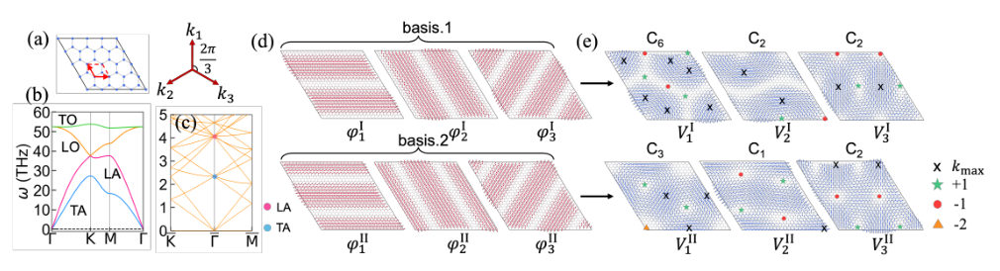
<figcaption class="paper-figure-caption"><b>Fig 1.</b> FIG. 1. Formation of phonon vortex modes via symmetry-adapted linear combinations of degenerate planar modes. (a) Structure of a hexagonal lattice and the k directions of 3-fold plane waves in (d). Phonon bands of (b) a unitcell and (c) a 24 × 24 supercell. (d) Six degenerate TA plane waves at ω ≈2.34 THz. (e) Six degenerate TA vortex modes at the same frequency, with the winding number of each vortex and the Cn rotational symmetry of the mode indicated. The crosses indicate the sites of P max d (maximum amplitude).</figcaption>
</figure>
<figure class="paper-figure-card">
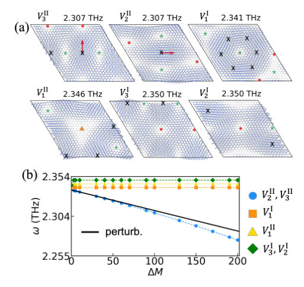
<figcaption class="paper-figure-caption"><b>Fig 2.</b> FIG. 2. Phonon vortex modes with a single heavy mass defect. (a) Six lowest-frequency TA modes for ∆M = 108 (M ′ = 120 u) in a 24X supercell. The red arrows indicate resonance (see Fig. 1e legend for the meaning of other symbols). (b) The frequency ω as a function of ∆M. The solid line indicates the prediction from the perturbation theory, Eq. (1), with c ≈2.5 × 10−4.</figcaption>
</figure>
<figure class="paper-figure-card">
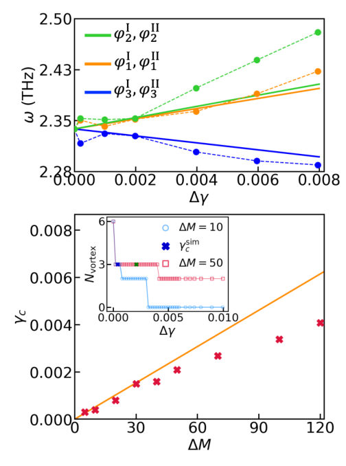
<figcaption class="paper-figure-caption"><b>Fig 3.</b> FIG. 3. Shear-mass competition. (a) Numerical frequency ω (points) of the six lowest-frequency TA modes, which are all planar, as a function of ∆γ (with a fixed ∆M = 108), compared with the perturbation theory (lines). (b) Numerical strain threshold γc as a function of ∆M, compared to Eq. (5) (line). (inset) Nvortex vs. ∆γ for two given ∆M.</figcaption>
</figure>
<figure class="paper-figure-card">
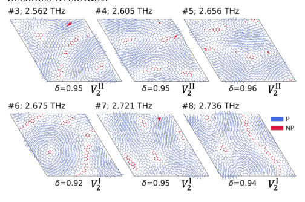
<figcaption class="paper-figure-caption"><b>Fig 4.</b> FIG. 4. Six lowest-frequency modes for a MAC configuration. The vibrations of phononic (P) and non-phononic (NP) atoms are indicated by blue and red arrows (enlarged for better vi- sualization).</figcaption>
</figure>
<figure class="paper-figure-card">
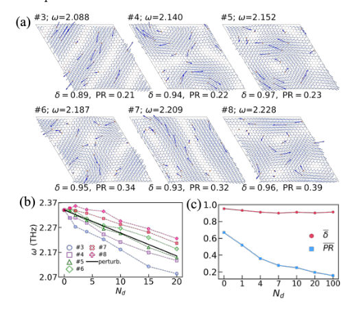
<figcaption class="paper-figure-caption"><b>Fig 5.</b> FIG. 5. Phonon vortex modes with multiple heavy mass de- fects. (a) Six lowest-frequency TA modes for 20 heavy im- purities (∆M = 108) in a 24 × 24 supercell. The dark blue arrows indicate resonance. (b) The frequency ω as a func- tion of Nd for the six modes, averaged over multiple random realizations of the impurity positions. The black solid line in- dicates Eq. (15). (c) The mean participation ratio and spatial coherence as a function of Nd.</figcaption>
</figure>
</div>
<p><strong>Summary.</strong> This work provides a first-principles understanding of phonon vortices in 2D crystals, demonstrating that these modes are symmetry-protected features. The authors model how these vortices are stabilized by heavy impurities but suppressed by shear strain, establishing a predictable crossover threshold. This framework offers a powerful tool for designing materials with tailored vibrational properties.</p>
<p><strong>Why it may be interesting.</strong> The framework connecting vibrational topological defects (vortices) to fundamental symmetries and external perturbations (strain/defects) provides a generalizable model for understanding lattice dynamics in engineered materials, relevant to phononics and thermal transport.</p>
<details>
<summary>Detailed structure</summary>
<p><strong>Main problem.</strong> The study investigates the fundamental origin, emergence, and suppression mechanisms of phonon vortices in two-dimensional crystals.</p>
<p><strong>Main result.</strong> Phonon vortices are shown to arise intrinsically from lattice symmetry in perfect crystals, while their existence is governed by a competition between impurity-induced resonance and shear-induced symmetry breaking.</p>
<p><strong>Method.</strong> The research employs phonon eigenvalue calculations, group theory (SALC), and perturbation theory to model the effects of mass defects and strain.</p>
<p><strong>Model / system.</strong> The system under study is two-dimensional crystalline materials (e.g., graphene) modeled on hexagonal or square lattices, analyzed using the phonon eigenvalue equation.</p>
<p><strong>Key observables.</strong> Phonon vortex modes, frequency shifts ($\omega$), spatial coherence ($\delta$), and the strain threshold ($\gamma_c$).</p>
<p><strong>Important parameters / regimes.</strong> Heavy mass impurity concentration ($\Delta M$), shear strain ($\Delta \gamma$), and lattice symmetry point groups ($C_3$, $C_6$).</p>
<p><strong>Assumptions / limitations.</strong> The analysis often assumes the single-site resonance dominates the full mode behavior, and the initial understanding is built upon symmetry-adapted linear combinations.</p>
<p><strong>Figures summary.</strong> Figures illustrate the formation of vortex modes, the frequency dependence on impurity concentration, and the competition between impurity and shear effects determining a crossover strain threshold.</p>
<p><strong>Paper structure.</strong> The paper develops from establishing the symmetry origin of vortices in perfect crystals, to analyzing the stabilizing effect of heavy impurities, and finally quantifying the suppression mechanism via shear deformation, culminating in a predictive strain threshold.</p>
</details>
<details>
<summary>Abstract</summary>
<p>Phonon vortices are vortex-like displacement fields that appear in the vibrational modes of two- dimensional materials. Here, we demonstrate that these vortices arise as symmetry-adapted linear combinations of degenerate planar phonon modes, with the superposition coefficients uniquely de- termined by the lattice point group. This symmetry principle establishes that vortices are intrinsic standing-wave solutions in perfect crystals, requiring neither impurities nor disorder. A heavy mass impurity favors vortex modes over planar modes through stronger resonance-induced frequency soft- ening, whereas shear deformation suppresses vortex modes by breaking rotational symmetry. The competition between these two effects gives rise to a precisely predictable strain threshold. The proposed framework, grounded in symmetry and energy-minimization, provides a useful basis for understanding vibrational topological defects induced by other types of impurities or defects. This study further suggests that defect and shear engineering constitutes an effective tuning strategy for controlling vibrational modes and the associated thermal and mechanical properties of crystals.</p>
</details>
<p><sub><a href="#top">↑ back to top</a></sub></p>

<p><a id="paper-2608.28914"></a></p>
<h3 id="exact-haar-statistics-of-planar-math1452math-purity-in-multipartite-quantum-systems"><a href="http://arxiv.org/abs/2608.28914v1">Exact Haar Statistics of Planar $k$-Purity in Multipartite Quantum Systems</a></h3>
<p><strong>Authors:</strong> Kourosh Mirsohi<br>
<strong>Type:</strong> theory · <strong>Category:</strong> statistical mechanics · <strong>PDF:</strong> <a href="https://arxiv.org/pdf/2608.28914v1">https://arxiv.org/pdf/2608.28914v1</a><br>
<strong>Analysis basis:</strong> full PDF text, analyzed in chunks</p>
<div class="figure-strip-hint">↔ Scroll figures horizontally</div>
<div class="paper-figures-scroll">
<figure class="paper-figure-card">
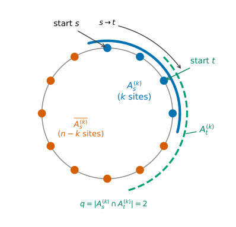
<figcaption class="paper-figure-caption"><b>Fig 1.</b> FIG. 1. Subsystem geometry for planar k-purity. The blue sites form one k-site interval A(k) s ; the orange sites form its (n −k)-site complement. The arrow fixes the translation orientation, and the dashed green arc shows a translated interval A(k) t with overlap q = |A(k) s ∩A(k) t |. Translating through all starts in Zn produces the reductions averaged in Eq. (4).</figcaption>
</figure>
<figure class="paper-figure-card">

<figcaption class="paper-figure-caption"><b>Fig 2.</b> Figure 1 illustrates the associated bipartition. We define the planar k-purity by</figcaption>
</figure>
<figure class="paper-figure-card">
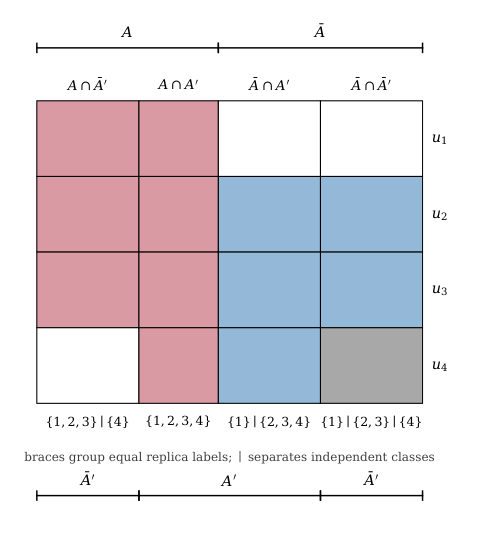
<figcaption class="paper-figure-caption"><b>Fig 3.</b> FIG. 2. Representative Kronecker-delta contraction for σ = (23). The four columns represent A \ A′, A ∩A′, A′ \ A, and (A ∪A′)c, with dimensions y, x, y, w. Equal fills identify local replica labels; the braces give the same equality classes algebraically. The component counts (2, 1, 2, 3) produce xy4w3, with multiplicity four in Table I. Region widths are schematic.</figcaption>
</figure>
<figure class="paper-figure-card">
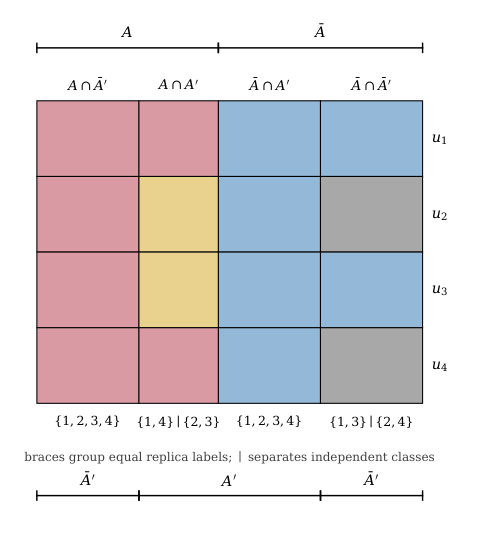
<figcaption class="paper-figure-caption"><b>Fig 4.</b> FIG. 3. Crossed contraction for σ = (13)(24), the third row of Table I. The component counts (1, 2, 1, 2) across regions of di- mensions y, x, y, w give x2y2w2 with multiplicity two. Because all four region dimensions depend on the translated over- lap, this contraction displays the origin of the displacement- dependent covariance.</figcaption>
</figure>
<figure class="paper-figure-card">
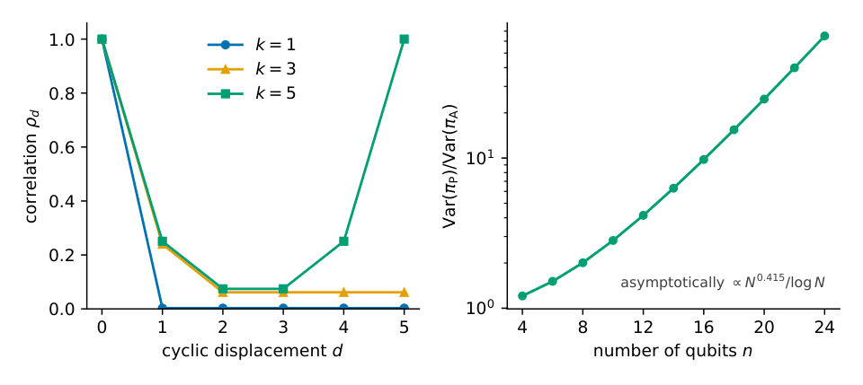
<figcaption class="paper-figure-caption"><b>Fig 5.</b> FIG. 4. Geometry of planar-purity fluctuations. Left: exact correlation coefficient ρd = C(2) 10,k(d)/C(2) 10,k(0) for the nonbalanced choices k = 1, 3 and the balanced choice k = 5. The balanced endpoint d = 5 is the complementary interval and obeys πA = πAc exactly; changing k alters the complete displacement kernel. Right: exact variance ratio between balanced planar and absolute purity for even 4 ≤n ≤24. The annotation gives the asymptotic growth implied by Eqs. (33) and (34); no fitted values enter either panel.</figcaption>
</figure>
</div>
<p><strong>Summary.</strong> This paper calculates the exact statistical moments, including the variance, for a measure called planar $k$-purity in multipartite quantum systems. By analyzing how purity depends on the overlap of geometrically related subsystems, it reveals that local correlations (subsystem incidence) control collective fluctuations even when single-cut marginals appear featureless. This offers a powerful, geometry-aware tool for characterizing multipartite entanglement.</p>
<p><strong>Why it may be interesting.</strong> The work provides a rigorous, geometry-aware benchmark for entanglement beyond simple marginal constraints, which is crucial for understanding how local correlations dictate global quantum properties in many-body systems.</p>
<details>
<summary>Detailed structure</summary>
<p><strong>Main problem.</strong> The paper aims to quantify multipartite entanglement in pure quantum states by analyzing the statistical properties of planar $k$-purity.</p>
<p><strong>Main result.</strong> It derives exact closed-form expressions for the mean, covariance kernel, and variance of planar $k$-purity for Haar-random states, showing that planar fluctuations are distinct from those governed by single-cut marginals.</p>
<p><strong>Method.</strong> The analysis uses advanced theoretical techniques involving replica calculations, site-factorized permutation representations, and the application of generalized trace formulas on replicated quantum states.</p>
<p><strong>Model / system.</strong> The system is a multipartite quantum state of $n$ parties with local dimension $p$, specifically focusing on Haar-random pure states distributed on a ring geometry.</p>
<p><strong>Key observables.</strong> Planar $k$-purity ($\pi^{(k)}_P$), joint purity of two intervals, and the variance of these purity measures.</p>
<p><strong>Important parameters / regimes.</strong> The number of parties ($n$), the local dimension ($p$), and the interval size ($k$).</p>
<p><strong>Assumptions / limitations.</strong> The calculations assume the state is Haar-random and focus on the planar constraint, which is a specific geometric restriction on entanglement.</p>
<p><strong>Figures summary.</strong> Figure 1 illustrates the geometry for planar $k$-purity, showing an interval and its translation with a defined overlap.</p>
<p><strong>Paper structure.</strong> The paper develops the theory by first defining planar $k$-purity as a cost function, then deriving the joint purity moments using replica methods, and finally presenting closed-form expressions and asymptotic limits for the variance.</p>
</details>
<details>
<summary>Abstract</summary>
<p>Planar $k$-uniform states have maximally mixed reductions on every $k$-site interval of a ring. We introduce planar $k$-purity---the mean purity of those intervals---as a faithful cost function for this simultaneous constraint. For a Haar-random pure state of $n$ parties with local dimension $p$, the joint purity of two intervals depends only on their overlap. An exhaustive four-replica calculation therefore yields the complete cyclic covariance kernel and a closed variance for every $1\le k\le\lfloor n/2\rfloor$. In the balanced qubit case, $k=\lfloor n/2\rfloor$ and $N=2^n$, the variance is asymptotic to $20/(3nN^2)$ for even $n$ and $6/(nN^2)$ for odd $n$. A site-factorized permutation representation gives all raw moments and permits exact finite-sum evaluation of the skewness. Fixed-seed simulations validate nonbalanced qubit and qutrit cases, while balanced-qubit simulations through $n=10$ validate the parity formulas and finite-size skewness. Balanced planar and absolute balanced purity have the same Haar mean but different fluctuations; the planar variance is approximately $2.83$ times larger at $n=10$. Thus subsystem incidence, although invisible to every one-cut marginal distribution, controls the collective fluctuations of geometrically related cuts. Together with universal attainability and a linear number of interval constraints at balance, this provides a geometry-aware benchmark for multipartite entanglement beyond AME existence regimes.</p>
</details>
<p><sub><a href="#top">↑ back to top</a></sub></p>

<p><a id="paper-2608.30340"></a></p>
<h3 id="exact-quantum-splitting-and-the-structure-of-finite-algebras"><a href="http://arxiv.org/abs/2608.30340v1">Exact quantum splitting and the structure of finite algebras</a></h3>
<p><strong>Authors:</strong> Muhammad Imran<br>
<strong>Type:</strong> theory · <strong>Category:</strong> quantum information and computing · <strong>PDF:</strong> <a href="https://arxiv.org/pdf/2608.30340v1">https://arxiv.org/pdf/2608.30340v1</a><br>
<strong>Analysis basis:</strong> full PDF text, analyzed in chunks</p>
<div class="figure-strip-hint">↔ Scroll figures horizontally</div>
<div class="paper-figures-scroll">
<figure class="paper-figure-card">
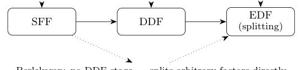
<figcaption class="paper-figure-caption"><b>Fig 1.</b> Figure 1: Where each quantum contribution sits in the factorization pipeline. Doliskani [10] accelerates DDF and leaves EDF classical and randomized. The present work makes EDF exact and performs no DDF at all. The two therefore act on disjoint stages.</figcaption>
</figure>
</div>
<p><strong>Summary.</strong> This paper develops an exact quantum algorithm to solve fundamental problems in computational algebra, such as polynomial factorization and determining the structure of finite-dimensional algebras. By using unconditional quantum amplitude amplification, it achieves a deterministic, exact quantum solution for these problems, bypassing reliance on unproven number-theoretic conjectures.</p>
<p><strong>Why it may be interesting.</strong> While the subject is pure algebra, the focus on achieving <em>exact</em> quantum computation for deterministic algebraic structures is a significant theoretical result in quantum computation complexity, demonstrating quantum power beyond mere speedup.</p>
<details>
<summary>Detailed structure</summary>
<p><strong>Main problem.</strong> The paper addresses the computational problem of factoring polynomials over finite fields and determining the algebraic structure (radical and Wedderburn decomposition) of finite-dimensional associative algebras over $\mathbb{F}_q$.</p>
<p><strong>Main result.</strong> It presents an unconditional exact quantum algorithm that solves these algebraic structure problems with certainty, achieving a complexity of $O(n^4 \log q)$ quantum $\mathbb{F}_q$-operations.</p>
<p><strong>Method.</strong> The core method involves adapting quantum amplitude amplification to the splitting step of Berlekamp's algorithm, thereby providing an exact quantum derandomization for algebraic decomposition.</p>
<p><strong>Model / system.</strong> The mathematical system is a finite-dimensional associative $\mathbb{F}_q$-algebra $A$ of dimension $n$, defined by its structure constants. The computation is modeled within the quantum circuit model, specifically targeting the complexity class $\text{EQPuC}$.</p>
<p><strong>Key observables.</strong> The primary observables are the radical $\text{Rad}(A)$ and the decomposition of the semisimple quotient $A/\text{Rad}(A)$ into minimal two-sided ideals.</p>
<p><strong>Important parameters / regimes.</strong> Key parameters include the field size $q$, the algebra dimension $n$, and the number of irreducible factors $r$ of the polynomial being factored.</p>
<p><strong>Assumptions / limitations.</strong> The algorithm relies on the exact knowledge of the success probability derived from unconditional counting arguments, allowing for perfect amplitude amplification.</p>
<p><strong>Figures summary.</strong> No specific figures were summarized, but the notes indicate a comparison of various factorization approaches (Table 1) and the theoretical establishment of the complexity bounds.</p>
<p><strong>Paper structure.</strong> The paper builds from the quantum splitting of polynomials (Berlekamp's algorithm) to the general structure theory of algebras. It first establishes the quantum splitting step, then extends this to commutative algebras, and finally uses classical structure theory (Rényi's work) to achieve the full Wedderburn decomposition for general associative algebras.</p>
</details>
<details>
<summary>Abstract</summary>
<p>Berlekamp's algorithm factors a squarefree polynomial $f\in\mathbb{F}_q[x]$ by deterministic linear algebra, reducing the problem to splitting an explicit commutative algebra $B\cong\mathbb{F}_q^r$ into its $r$ simple factors. For large odd $q$, the standard efficient splitting step is randomized, while known derandomizations are conditional on the Extended Riemann Hypothesis. We give an unconditional exact quantum implementation in a circuit model permitting single-qubit rotations through efficiently computable angles. The construction uses an unconditional counting argument. For a block containing $s\ge2$ irreducible factors, a quadratic-character test in odd characteristic and an absolute-trace test in characteristic $2$ yield a nonconstant test element with probability $p_{q,s}\ge\tfrac12$, known exactly in advance and depending only on $q$ and $s$, not on the unknown factorization. Exact amplitude amplification therefore converts each randomized test into a procedure succeeding with certainty after one amplification iteration. The resulting algorithm uses exactly $r-1$ quantum splitting rounds and $O(n^3\log q)$ quantum $\mathbb{F}_q$-operations and $O(n^3)$ classical operations, requiring no primitive root, quadratic non-residue, or distinct-degree preprocessing. The method also splits arbitrary finite-dimensional separable commutative $\\mathbb{F}_q$-algebras given by structure constants. Combined with R'onyai's classical structure theory, which computes the radical deterministically and reduces the remaining tasks deterministically to polynomial factorization, it yields the radical and the Wedderburn decomposition of $A/\mathrm{Rad}(A)$ into minimal two-sided ideals, with certainty, for any $n$-dimensional associative $\mathbb{F}_q$-algebra given by structure constants, using $O(n^4\log q)$ quantum $\mathbb{F}_q$-operations.</p>
</details>
<p><sub><a href="#top">↑ back to top</a></sub></p>

<p><a id="paper-2608.29911"></a></p>
<h3 id="exact-resource-laws-for-passive-wavelength-routing-in-entanglement-networks"><a href="http://arxiv.org/abs/2608.29911v1">Exact Resource Laws for Passive Wavelength Routing in Entanglement Networks</a></h3>
<p><strong>Authors:</strong> Ekta Panwar, Gilberto Borges, Saeid Salari, Kartik Kakade, Samgeeth Puliyil, Peter Rapčan, Mario Ziman, Djeylan Aktas<br>
<strong>Type:</strong> theory · <strong>Category:</strong> quantum information and computing · <strong>PDF:</strong> <a href="https://arxiv.org/pdf/2608.29911v1">https://arxiv.org/pdf/2608.29911v1</a><br>
<strong>Analysis basis:</strong> full PDF text, analyzed in chunks</p>
<div class="figure-strip-hint">↔ Scroll figures horizontally</div>
<div class="paper-figures-scroll">
<figure class="paper-figure-card">
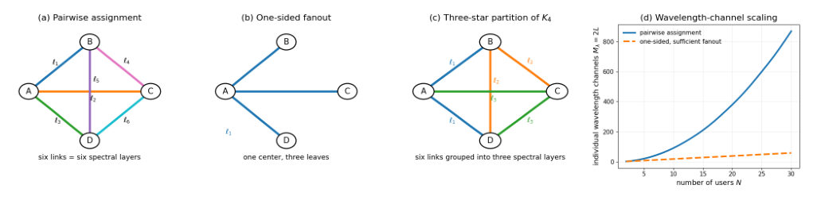
<figcaption class="paper-figure-caption"><b>Fig 1.</b> FIG. 1. A passive wavelength assignment and its graph representation. In panel (a), the six links of K4 are labelled as six separate spectral layers. Panel (b) shows one star layer. In panel (c), equal colours and layer labels identify the two edges grouped into each of three star layers, making the layer partition distinct from the pairwise assignment. The final panel compares the individual wavelength-channel count Mλ = 2L for the pairwise assignment and the minimum one-sided assignment with sufficient fan-out; the two curves also use different line styles.</figcaption>
</figure>
<figure class="paper-figure-card">

<figcaption class="paper-figure-caption"><b>Fig 2.</b> FIG. 2. Exact one-sided layer count for K20 as a function of the fan-out bound. The edge-capacity term controls small fan-out, while the vertex-cover term N −1, which is linear in N, sets the plateau.</figcaption>
</figure>
<figure class="paper-figure-card">

<figcaption class="paper-figure-caption"><b>Fig 3.</b> FIG. 3. Pair-generation requirement for the K8 architectures under the independent-layer model with fixed balanced splitters. The vertical axis shows γH, the total input pair-generation requirement per unit common key rate normalized by the common edge gain. The curves are the closed-form requirements in Eqs. (108)–(111), together with the unsplit pairwise endpoint γH = 28. The vertical line marks ηst = p</figcaption>
</figure>
</div>
<p><strong>Summary.</strong> This work develops a comprehensive theoretical framework to optimize resource allocation in passive entanglement networks. By mapping wavelength routing to graph optimization problems, the authors derive exact resource laws governing spectral use and receiver load. Ultimately, they connect these structural limits to the minimum required photon source rate needed to achieve a target quantum key distribution rate, providing a direct design tool for quantum hardware.</p>
<p><strong>Why it may be interesting.</strong> The rigorous mathematical framework connecting abstract graph decomposition theorems (like minimum vertex cover or star decomposition) directly to quantifiable physical constraints (like achievable key rates and hardware losses) provides a powerful tool for designing next-generation quantum optical networks.</p>
<details>
<summary>Detailed structure</summary>
<p><strong>Main problem.</strong> The paper addresses determining the exact resource laws governing passive wavelength routing in entanglement networks, specifically how spectral use, receiver load, and fan-out constrain each other.</p>
<p><strong>Main result.</strong> It establishes that for both one-sided and full fan-out scenarios, specific graph structures (like balanced binary hierarchies) can achieve optimal resource utilization, and it derives the minimum required pair-generation rate to meet target key rates.</p>
<p><strong>Method.</strong> The authors use a graph-theoretic approach, modeling wavelength assignment as a resource-optimization problem on the network's connectivity graph, and then extending this to a full quantum key distribution (QKD) rate analysis.</p>
<p><strong>Model / system.</strong> The system is an entanglement-based quantum communication network using spectrally correlated photon pairs. The analysis is formalized using graph theory concepts, representing wavelength assignments as unions of bicliques (spectral layers).</p>
<p><strong>Key observables.</strong> Spectral layer count ($L$), maximum receiver wavelength load ($\chi$), minimum total pair-generation rate, and the resulting BBM92 QKD secret-key-rate.</p>
<p><strong>Important parameters / regimes.</strong> Fan-out limits, passive-splitter loss ($\eta_{st}$), and the source spectrum weights ($b_j$).</p>
<p><strong>Assumptions / limitations.</strong> The analysis assumes the use of a continuous-wave-pumped broadband source for the final QKD rate calculation, and certain structural assumptions are made regarding layer decomposition.</p>
<p><strong>Figures summary.</strong> Figure 1 illustrates pairwise assignment, one-sided fan-out, and wavelength-channel scaling, comparing different assignment methods.</p>
<p><strong>Paper structure.</strong> The paper progresses from defining the resource-optimization problem on the connectivity graph (graph theory) to deriving exact layer count bounds (star decomposition, biclique covers), and finally culminates in applying these structural results to calculate the minimum required source rate for a specific QKD protocol.</p>
</details>
<details>
<summary>Abstract</summary>
<p>Entanglement-based networks provide a scalable framework for multiuser quantum communication by passively routing spectrally correlated photon pairs across interconnected nodes. Several wavelength-allocation schemes have been demonstrated experimentally, but these designs do not yet give a general way to determine how spectral use, receiver load, repeated connections, and fan-out constrain one another. We address this problem through the network's connectivity graph, where the wavelength assignment becomes a resource-optimization problem. For one-sided fan-out, assigning each link to a center and grouping links with the same center gives an exact optimization for arbitrary networks and fan-out limits. We solve this for complete networks and for complete networks in which every user has one excluded partner. Allowing both conjugate wavelengths to fan out changes the resource landscape: a balanced binary hierarchy attains the minimum spectral-layer count for a complete network while reducing the maximum receiver load to logarithmic in the number of users. An eight-user complete network then makes explicit the competing roles of spectral efficiency, receiver load, redundancy, and fan-out. We include the passive-splitter loss and the dependence of the key rate on the delivered pair flux to determine the minimum total pair-generation rate required to meet the prescribed targets. Finally, we formulate the corresponding BBM92 quantum key distribution (QKD) secret-key-rate analysis for a continuous-wave-pumped broadband source, with true and accidental coincidences evaluated between detector channels at the two endpoint users and relative layer pair-generation rates fixed by the source spectrum. This framework, therefore, provides a direct route from exact network resource laws to the design and comparison of passive entanglement architectures under experimentally specified hardware constraints.</p>
</details>
<p><sub><a href="#top">↑ back to top</a></sub></p>

<p><a id="paper-2608.31040"></a></p>
<h3 id="fast-fault-tolerant-decoders-for-hypergraph-product-and-lifted-product-codes"><a href="http://arxiv.org/abs/2608.31040v1">Fast Fault-Tolerant Decoders for Hypergraph Product and Lifted-Product Codes</a></h3>
<p><strong>Authors:</strong> Asit Kumar Pradhan, Nithin Raveendran, David Declercq, Bane Vasić<br>
<strong>Type:</strong> theory · <strong>Category:</strong> quantum information and computing · <strong>PDF:</strong> <a href="https://arxiv.org/pdf/2608.31040v1">https://arxiv.org/pdf/2608.31040v1</a><br>
<strong>Analysis basis:</strong> full PDF text, analyzed in chunks</p>
<div class="figure-strip-hint">↔ Scroll figures horizontally</div>
<div class="paper-figures-scroll">
<figure class="paper-figure-card">

<figcaption class="paper-figure-caption"><b>Fig 1.</b> Fig. 1: An example of a Tanner graph. Circular nodes represent variable nodes, and rectangular nodes represent check nodes. Each check node imposes a linear constraint on its neighboring variable nodes. For instance, check node c1 is connected to variable nodes v1 and v2, which implies that in any valid codeword v1 + v2 ≡0 (mod 2).</figcaption>
</figure>
<figure class="paper-figure-card">

<figcaption class="paper-figure-caption"><b>Fig 2.</b> Fig. 3: Measurement of stabilizers that acts on one qubit.</figcaption>
</figure>
<figure class="paper-figure-card">

<figcaption class="paper-figure-caption"><b>Fig 3.</b> Fig. 2: Node types in the Tanner graphs of HGP/LP codes. VV-type variable nodes are depicted with a circle inside another circle because they are obtained by multiplying two variable nodes, each represented by a single circle. Analogously, CC-type variable nodes, X-checks, and Z-checks are represented, respectively, by a square inside another square, a circle inside a square, and a square inside a circle.</figcaption>
</figure>
<figure class="paper-figure-card">

<figcaption class="paper-figure-caption"><b>Fig 4.</b> Fig. 4: Measurement of the Z2Z3Z4Z5 operator.</figcaption>
</figure>
<figure class="paper-figure-card">

<figcaption class="paper-figure-caption"><b>Fig 5.</b> Fig. 6: Syndrome measurement circuit for the CSS code in 1: The fault locations are shown as a set of random gates Fi, for i ∈[16], which are Pauli matrices with fixed probabilities. The X stabilizer is measured once, and the Z stabilizers are measured twice.</figcaption>
</figure>
</div>
<p><strong>Summary.</strong> This paper tackles the challenge of developing fast, fault-tolerant decoders for QLDPC codes used in quantum computing. The authors overcome the complexity bottlenecks associated with modeling circuit faults by designing novel message-passing decoders. This results in a decoder that maintains high performance while drastically reducing computational overhead compared to current state-of-the-art methods.</p>
<p><strong>Why it may be interesting.</strong> This work directly addresses the practical limitations of implementing quantum error correction codes by providing a computationally efficient decoding scheme that accounts for realistic circuit noise.</p>
<details>
<summary>Detailed structure</summary>
<p><strong>Main problem.</strong> The primary goal is to design low-complexity, fault-tolerant decoders for Quantum Low-Density Parity-Check (QLDPC) codes to significantly reduce decoding latency.</p>
<p><strong>Main result.</strong> The authors propose message-passing decoders that directly resolve stabilizer-induced Trapping Sets (TSs) arising from CNOT faults, achieving error rates comparable to existing methods but with substantially lower decoding complexity.</p>
<p><strong>Method.</strong> The method involves deriving QLDPC decoders from parent classical LDPC decoders and reinterpreting CNOT faults as a combination of data errors and syndrome-bit measurement errors, thus avoiding explicit fault nodes.</p>
<p><strong>Model / system.</strong> The work focuses on QLDPC codes, specifically those constructed using Hypergraph-Product (HGP) and Lifted-Product (LP) constructions, which are used for quantum error correction.</p>
<p><strong>Key observables.</strong> Logical error rates, decoding complexity, and the ability to resolve stabilizer-induced Trapping Sets (TSs).</p>
<p><strong>Important parameters / regimes.</strong> The structure of the HGP and LP codes, and the nature of the circuit-level noise model (CNOT faults).</p>
<p><strong>Assumptions / limitations.</strong> The approach assumes that CNOT faults manifesting as syndrome errors are equivalent to a data error plus syndrome-bit measurement error, allowing for a simplified phenomenological Tanner graph.</p>
<p><strong>Figures summary.</strong> Not specified, but the notes mention illustrating a Tanner graph showing variable and check nodes and constraints.</p>
<p><strong>Paper structure.</strong> The paper identifies bottlenecks in existing QLDPC decoding (OSD post-processing and auxiliary nodes for CNOT faults), proposes the key insight regarding stabilizer-induced TSs, and then details the derivation of message-passing decoders to resolve these TSs directly.</p>
</details>
<details>
<summary>Abstract</summary>
<p>We design low-complexity, fault-tolerant decoders for quantum low-density parity-check (QLDPC) codes with the goal of reducing decoding latency. We target two major bottlenecks of decoding under the \emph{circuit-level} noise model: (i) post-processing via order-statistics decoding (OSD), and (ii) the large number of auxiliary variable nodes commonly introduced to represent CNOT-induced correlations during syndrome extraction. Our key observation is that propagating CNOT faults (\emph{hook errors}) create \emph{stabilizer-induced} trapping sets (TSs) that are intrinsic to hypergraph-product (HGP) and lifted-product (LP) constructions. Therefore, instead of modeling each such fault with an explicit correlation node and relying on OSD to clean up the resulting failures, we design message-passing decoders that resolve the corresponding \emph{stabilizer-induced} TSs directly. We obtain these decoders by deriving QLDPC decoders from decoders for the parent classical LDPC codes and using them collectively to correct broad families of \emph{stabilizer-induced} TSs. For CNOT faults that manifest primarily as syndrome errors, we show that their effect is equivalent to a data error together with syndrome-bit measurement errors. Consequently, given repeated measurements and a decoding graph that already includes nodes representing syndrome-bit errors, no distinct variable node is needed for each CNOT fault. Using a \emph{phenomenological} Tanner graph with nodes representing only data errors and syndrome-bit errors, simulations on the LP codes show a reduction in, or comparable, logical error rates relative to BP+OSD, at substantially lower decoding complexity.</p>
</details>
<p><sub><a href="#top">↑ back to top</a></sub></p>

<p><a id="paper-2608.30375"></a></p>
<h3 id="first-principle-predictions-of-fragmentation-functions-via-quantum-computing"><a href="http://arxiv.org/abs/2608.30375v1">First-principle predictions of fragmentation functions via quantum computing</a></h3>
<p><strong>Authors:</strong> Juan J. Gálvez-Viruet, Felipe J. Llanes-Estrada, Nicolas M. Arenaza, María Gómez-Rocha, T. J. Hobbs<br>
<strong>Type:</strong> theory · <strong>Category:</strong> quantum information and computing · <strong>PDF:</strong> <a href="https://arxiv.org/pdf/2608.30375v1">https://arxiv.org/pdf/2608.30375v1</a><br>
<strong>Analysis basis:</strong> full PDF text, analyzed in chunks</p>
<div class="figure-strip-hint">↔ Scroll figures horizontally</div>
<div class="paper-figures-scroll">
<figure class="paper-figure-card">

<figcaption class="paper-figure-caption"><b>Fig 1.</b> Figure 2: Upper plot: typical terms of the Light-Front QCD Hamiltonian [4] (fully developed algebraic expressions in terms of particle creation/destruction operators are involved [5]). Lower plot: an empty gluon-register (setting the &quot;presence&quot; qubit to 1 fills it with one gluon of the quantum numbers specified by the following qubits). These registers are entangled by the (particle-number changing) Hamiltonian terms.</figcaption>
</figure>
</div>
<p><strong>Summary.</strong> This paper proposes a quantum computing algorithm to calculate fundamental observables like fragmentation functions directly from the first-principles QCD Hamiltonian. By using a specialized particle-register encoding, the authors demonstrate a proof-of-concept simulation for heavy-quark fragmentation, opening a path for future quantum computers to tackle complex, non-perturbative QCD problems.</p>
<p><strong>Why it may be interesting.</strong> While the physics is high-energy QCD, the core contribution is the development and analysis of a quantum algorithm and encoding scheme for simulating a complex, variable-particle-number quantum field theory, which is highly relevant to quantum simulation techniques.</p>
<details>
<summary>Detailed structure</summary>
<p><strong>Main problem.</strong> The primary goal is to develop a first-principles method to compute fragmentation functions from Quantum Chromodynamics (QCD) using quantum computation.</p>
<p><strong>Main result.</strong> The authors presented an algorithm and a small-scale simulation demonstrating the feasibility of using quantum computers to calculate these longitudinal jet-structure observables, showing qualitative agreement with existing NRQCD benchmarks.</p>
<p><strong>Method.</strong> They developed a specialized 'particle-register encoding' for the second-quantized QCD Hamiltonian, which is applied via an algorithm implemented in Qiskit to simulate the process on classical hardware.</p>
<p><strong>Model / system.</strong> The physical system is Quantum Chromodynamics (QCD) quantized in the Light-Front Gauge. The method treats the system as a second-quantized field theory, focusing on the fragmentation of a heavy quark into quarkonium ($  ext{J}/\psi$).</p>
<p><strong>Key observables.</strong> Fragmentation functions ($D_h^j(z)$), reduced density matrix, quantum concurrence, and discord.</p>
<p><strong>Important parameters / regimes.</strong> The simulation benchmarked against NRQCD at a scale $\mu = 3m_c$; the classical simulation was limited to 29 qubits.</p>
<p><strong>Assumptions / limitations.</strong> The approach assumes the ability to scale to future quantum computers ($\sim 10^3$ qubits) and relies on approximations such as Fock space truncation and Trotter step discretization.</p>
<p><strong>Figures summary.</strong> Figure 1 estimates the resource requirements (qubits, gates) for the calculation. Figure 2 illustrates the structure of the Light-Front QCD Hamiltonian and operator action. Figure 3 compares the calculated $c 	o 	ext{J}/\psi$ fragmentation function against NRQCD results.</p>
<p><strong>Paper structure.</strong> The paper introduces the scientific problem, details the novel particle-register encoding methodology, presents the small-scale simulation results (benchmarked against NRQCD), and concludes by discussing the resource requirements and future potential for large-scale quantum computation.</p>
</details>
<details>
<summary>Abstract</summary>
<p>We report on an algorithm to compute fragmentation functions from the first principles Quantum Chromodynamics (QCD) Hamiltonian quantized in Light-Front Gauge, opening a path for digital quantum computers to calculate these longitudinal jet-structure observables. Simulating the behaviour of such computers on a classical cluster (which is memory-limited to about 30 qubits, given the expansive Hilbert spaces of actual quantum computers), we run a demonstration of a heavy-quark leading parton fragmenting into quarkonium, which we benchmark against NRQCD computations. Future quantum computers, perhaps concurrently running with HL-LHC, would have ample opportunity to extract arbitrary parton-hadron combinations.</p>
</details>
<p><sub><a href="#top">↑ back to top</a></sub></p>

<p><a id="paper-2608.30697"></a></p>
<h3 id="flatness-preserving-operations"><a href="http://arxiv.org/abs/2608.30697v1">Flatness-Preserving Operations</a></h3>
<p><strong>Authors:</strong> Otto Veltheim, Esko Keski-Vakkuri<br>
<strong>Type:</strong> theory · <strong>Category:</strong> quantum information and computing · <strong>PDF:</strong> <a href="https://arxiv.org/pdf/2608.30697v1">https://arxiv.org/pdf/2608.30697v1</a><br>
<strong>Analysis basis:</strong> full PDF text, analyzed in chunks</p>
<div class="figure-strip-hint">↔ Scroll figures horizontally</div>
<div class="paper-figures-scroll">
<figure class="paper-figure-card">

<figcaption class="paper-figure-caption"><b>Fig 1.</b> Low-resolution page preview, page 2</figcaption>
</figure>
<figure class="paper-figure-card">

<figcaption class="paper-figure-caption"><b>Fig 2.</b> Low-resolution page preview, page 3</figcaption>
</figure>
<figure class="paper-figure-card">

<figcaption class="paper-figure-caption"><b>Fig 3.</b> Low-resolution page preview, page 4</figcaption>
</figure>
<figure class="paper-figure-card">

<figcaption class="paper-figure-caption"><b>Fig 4.</b> Low-resolution page preview, page 5</figcaption>
</figure>
<figure class="paper-figure-card">

<figcaption class="paper-figure-caption"><b>Fig 5.</b> Low-resolution page preview, page 6</figcaption>
</figure>
</div>
<p><strong>Summary.</strong> This paper characterizes Flatness-Preserving Operations (FPOs) for quantum channels, which are operations that ensure the output state remains 'flat' (proportional to a projector). The authors prove that such operations are severely restricted, amounting either to constant maps or specific structured operations related to OPOs. This work advances the understanding of resource theories by defining the precise boundaries of state transformation allowed while preserving flatness.</p>
<p><strong>Why it may be interesting.</strong> The characterization of operations that preserve specific structural properties (like flatness) is fundamental to understanding resource theories and the limitations of quantum information processing.</p>
<details>
<summary>Detailed structure</summary>
<p><strong>Main problem.</strong> The paper aims to rigorously identify and classify Flatness-Preserving Operations (FPOs) for quantum channels acting on bipartite quantum systems.</p>
<p><strong>Main result.</strong> FPOs are highly constrained, being either constant maps to a flat state or structured as Orthogonality-Preserving Operations (OPOs) of the form $E(
ho) = V (
ho \otimes \sigma)V^\dagger$.</p>
<p><strong>Method.</strong> The analysis involves defining and comparing multiple mathematical conditions for flatness preservation, including structural analysis of OPOs and using Rényi entropy differences for an alternative definition (FPO*).</p>
<p><strong>Model / system.</strong> The study is conducted on general finite-dimensional bipartite quantum systems, using CPTP quantum channels $E: D(H_A \otimes H_B) 	o D(H_C \otimes H_D)$ acting on density matrices.</p>
<p><strong>Key observables.</strong> Flatness property (state proportional to a projector), Rényi entropy differences ($\Delta^{\alphaeta}(
ho)$), and the action of the channel on orthogonal flat states.</p>
<p><strong>Important parameters / regimes.</strong> The structure of the quantum channel $E$, and the weights/proportions ($p, 1-p$) in convex combinations of flat states.</p>
<p><strong>Assumptions / limitations.</strong> All quantum operations are assumed to be completely positive and trace-preserving (CPTP), and the analysis is restricted to finite-dimensional Hilbert spaces.</p>
<p><strong>Paper structure.</strong> The paper first analyzes OPOs, establishing their characterization. It then defines FPOs and derives their structure. Finally, it introduces and proves the equivalence of FPO* (based on Rényi entropy) with the structural FPO definition.</p>
</details>
<details>
<summary>Abstract</summary>
<p>A quantum state is called flat if it is proportional to a projector. There has been recent interest in studying antiflatness, the property of diverging from flat states, and establishing a resource theory for it. Identifying the free operations (the Flatness-Preserving Operations (FPOs)) remained an open problem. For this purpose, we first discuss Orthogonality-Preserving Operations (OPOs), of which trivial examples are unitary operations in an isolated system. More generally, we give a simple proof that all OPOs are isometric embeddings consisting of combinations of unitaries/isometries and appending a fixed state. We then show that all FPOs are either constant maps to some fixed flat state or a special case of an OPO, where the appended fixed state must be a flat state. We also show that the only possible flat convex combinations of flat states are those of orthogonal flat states with weights given by their purities.</p>
</details>
<p><sub><a href="#top">↑ back to top</a></sub></p>

<p><a id="paper-2608.30629"></a></p>
<h3 id="gate-efficient-implementation-of-the-query-optimal-time-dependent-hamiltonian-simulation"><a href="http://arxiv.org/abs/2608.30629v1">Gate-Efficient Implementation of the Query-Optimal Time-Dependent Hamiltonian Simulation</a></h3>
<p><strong>Authors:</strong> Boyang Chen, Minbo Gao, Zhengfeng Ji, Tongyang Li, Xinzhao Wang, Shuo Zhou<br>
<strong>Type:</strong> theory · <strong>Category:</strong> quantum information and computing · <strong>PDF:</strong> <a href="https://arxiv.org/pdf/2608.30629v1">https://arxiv.org/pdf/2608.30629v1</a><br>
<strong>Analysis basis:</strong> full PDF text, analyzed in chunks</p>
<div class="figure-strip-hint">↔ Scroll figures horizontally</div>
<div class="paper-figures-scroll">
<figure class="paper-figure-card">

<figcaption class="paper-figure-caption"><b>Fig 1.</b> Figure 1: The circuit for W ⋆ 8 . The dashed box applies W ⋆ 4 to T1T0 and leaves T2 unchanged.</figcaption>
</figure>
</div>
<p><strong>Summary.</strong> This paper presents a method to implement the theoretically optimal quantum algorithm for simulating time-dependent Hamiltonian evolution. By employing an exact dyadic factorization technique, the authors significantly reduce the gate overhead compared to previous direct circuit implementations. This advancement is crucial for realizing complex quantum simulations on limited quantum hardware.</p>
<p><strong>Why it may be interesting.</strong> This work directly impacts the feasibility of simulating complex quantum dynamics on near-term quantum hardware by providing a concrete, gate-efficient circuit blueprint for achieving state-of-the-art query complexity.</p>
<details>
<summary>Detailed structure</summary>
<p><strong>Main problem.</strong> The paper addresses the challenge of implementing the theoretically query-optimal algorithm for time-dependent Hamiltonian simulation while minimizing the required quantum gate overhead.</p>
<p><strong>Main result.</strong> The authors provide a gate-efficient implementation that maintains the optimal query complexity, achieving a gate count scaling of $O\left(q\left(a + \log\left(1 + T(\alpha + eta T)/\varepsilon
ight)
ight)
ight)$ one- and two-qubit gates.</p>
<p><strong>Method.</strong> The core method involves utilizing an exact dyadic factorization of the ordered update product within a one-query transducer framework, applied to the Cayley product approximation of the time evolution operator.</p>
<p><strong>Model / system.</strong> The system is governed by a time-dependent Hamiltonian $H(t)$, and the goal is to simulate the time evolution operator $U_H(T) = \exp\left(-i \int_0^T H(t) dt
ight)$. The simulation is analyzed using the Lipschitz continuity ($eta$) and the bound ($\alpha$) of $H(t)$.</p>
<p><strong>Key observables.</strong> Query complexity ($q$), one- and two-qubit gate count, and auxiliary qubit count.</p>
<p><strong>Important parameters / regimes.</strong> Time duration $T$, error tolerance $\varepsilon$, Hamiltonian bound $\alpha$, and Lipschitz constant $eta$.</p>
<p><strong>Assumptions / limitations.</strong> The implementation relies on the existence of an exact dyadic factorization for the underlying ordered update product.</p>
<p><strong>Figures summary.</strong> Figure 1 illustrates the circuit decomposition used in the induction proof for the factorization of the operator $W_{\star 8}$.</p>
<p><strong>Paper structure.</strong> The paper builds upon the known query-optimal complexity, then details the circuit implementation by focusing on the one-query transducer, employing an exact dyadic factorization to achieve gate efficiency, and finally stating the resulting complexity bounds.</p>
</details>
<details>
<summary>Abstract</summary>
<p>The query-optimal algorithm of [CGWZ26] for general time-dependent Hamiltonian simulation uses $$   q = O\left( αT +   \frac{\log(1/\varepsilon)}{\log\left(e + \log(1/\varepsilon)/(αT) \right)}   \right) $$ queries to $\mathrm{HAM\mbox{-}T}$ within $\varepsilon$ error for a Lipschitz-continuous time-dependent Hamiltonian $H(t)$ on $[0,T]$ satisfying $\left\lVert H(t)\right\rVert\leqα$. However, its direct circuit implementation incurs a substantially larger gate overhead. In this note, we give an implementation of the same algorithm that retains its optimal query complexity and uses $$   O\left[ q \left( a + \log\left(1 + \frac{T(α+ βT)}{\varepsilon}   \right) \right) \right] $$ one- and two-qubit gates, where $a$ is the number of block-encoding ancilla qubits and $β$ is the Lipschitz constant of $H$. The main ingredient is an exact dyadic factorization of the ordered update product in the underlying one-query transducer.</p>
</details>
<p><sub><a href="#top">↑ back to top</a></sub></p>

<p><a id="paper-2608.29712"></a></p>
<h3 id="high-field-terahertz-spin-resonance-in-crmath1544mathomath1545math-above-the-spin-flop-transition"><a href="http://arxiv.org/abs/2608.29712v1">High-Field Terahertz Spin Resonance in Cr$_2$O$_3$ above the Spin-Flop Transition</a></h3>
<p><strong>Authors:</strong> Kaiyang Huang, Yuto Kinoshita, Natsuki Kanda, Takuya Matsuda, Masashi Tokunaga, Ryusuke Matsunaga, Yasuhiro H. Matsuda<br>
<strong>Type:</strong> experiment · <strong>Category:</strong> other · <strong>PDF:</strong> <a href="https://arxiv.org/pdf/2608.29712v1">https://arxiv.org/pdf/2608.29712v1</a><br>
<strong>Analysis basis:</strong> full PDF text, analyzed in chunks</p>
<div class="figure-strip-hint">↔ Scroll figures horizontally</div>
<div class="paper-figures-scroll">
<figure class="paper-figure-card">

<figcaption class="paper-figure-caption"><b>Fig 1.</b> Fig. 1(d). We note that this modified calculation is introduced as a phenomenological</figcaption>
</figure>
<figure class="paper-figure-card">

<figcaption class="paper-figure-caption"><b>Fig 2.</b> Fig. 1(Color online) (a) Time-domain waveforms of the transmitted THz pulse at 28.8 T and 0</figcaption>
</figure>
</div>
<p><strong>Summary.</strong> This work uses terahertz time-domain spectroscopy to measure spin resonance in $   ext{Cr}_2   ext{O}_3$ under very high magnetic fields. The key finding is that the resonance frequency's field dependence changes significantly above the spin-flop transition. This reduction in the slope is interpreted as evidence of magnetoelastic renormalization effects within the antiferromagnetic material.</p>
<p><strong>Why it may be interesting.</strong> The observation of a field-dependent renormalization of the magnetic resonance frequency, quantified by the slope reduction, provides insight into the coupling between magnetic order and lattice strain in quantum magnets.</p>
<details>
<summary>Detailed structure</summary>
<p><strong>Main problem.</strong> The study investigates the terahertz spin resonance behavior in the antiferromagnet $ ext{Cr}_2   ext{O}_3$ specifically in the high-field regime, well above the spin-flop transition.</p>
<p><strong>Main result.</strong> The resonance frequency exhibits a nearly linear field dependence with a slope of $\sim 22 	ext{ GHz/T}$ in the $20-30 	ext{ T}$ range, which is significantly smaller than the slope measured at lower fields ($\sim 28 	ext{ GHz/T}$).</p>
<p><strong>Method.</strong> Single-shot terahertz time-domain spectroscopy ($   ext{THz-TDS}$) was employed using pulsed magnetic fields up to $30 	ext{ T}$ to probe the magnetic excitations.</p>
<p><strong>Model / system.</strong> The system is $ ext{Cr}_2   ext{O}_3$, an antiferromagnetic material. The analysis involves comparing the measured $\omega-H$ relation to theoretical models for quasi-ferromagnetic resonance ($ ext{QFMR}$) above the spin-flop transition.</p>
<p><strong>Key observables.</strong> Resonance frequency ($\omega$) as a function of applied magnetic field ($H$) and temperature ($T$).</p>
<p><strong>Important parameters / regimes.</strong> High magnetic field regime ($20-30 	ext{ T}$), spin-flop field ($\approx 6 	ext{ T}$), and the derived effective anisotropy parameter ($b$).</p>
<p><strong>Assumptions / limitations.</strong> The reduction in the high-field slope is attributed to magnetoelastic renormalization of the anisotropy within the spin-flop phase.</p>
<p><strong>Figures summary.</strong> Figure 1 presents $    ext{THz}$ time-domain waveforms, differential signals, resonance spectra, and the derived $\omega-H$ relationship, including a linear fit for the high-field regime.</p>
<p><strong>Paper structure.</strong> The paper presents experimental measurements using $   ext{THz-TDS}$ on $  ext{Cr}_2   ext{O}_3$, analyzes the resonance frequency dependence on the magnetic field across different regimes (low-field vs. high-field), and compares the observed high-field slope to theoretical predictions incorporating magnetoelastic effects.</p>
</details>
<details>
<summary>Abstract</summary>
<p>We report single-shot terahertz time-domain spectroscopy of Cr$_2$O$_3$ in pulsed magnetic fields up to 30 T. Well above the spin-flop field, in the 20-30 T range, the resonance frequency exhibits a nearly linear field dependence with a slope of ~22 GHz/T, smaller than the 28 GHz/T reported from low-field measurements. This reduction is insensitive to temperature and to a 15° field tilt, suggesting an intrinsic high-field property.</p>
</details>
<p><sub><a href="#top">↑ back to top</a></sub></p>

<p><a id="paper-2608.30800"></a></p>
<h3 id="learning-rules-for-complex-valued-patterns-in-networks-of-oscillators"><a href="http://arxiv.org/abs/2608.30800v1">Learning rules for complex-valued patterns in networks of oscillators</a></h3>
<p><strong>Authors:</strong> Federico Sbravati, Aida Todri-Sanial<br>
<strong>Type:</strong> theory · <strong>Category:</strong> disordered systems and neural networks · <strong>PDF:</strong> <a href="https://arxiv.org/pdf/2608.30800v1">https://arxiv.org/pdf/2608.30800v1</a><br>
<strong>Analysis basis:</strong> full PDF text, analyzed in chunks</p>
<div class="figure-strip-hint">↔ Scroll figures horizontally</div>
<div class="paper-figures-scroll">
<figure class="paper-figure-card">

<figcaption class="paper-figure-caption"><b>Fig 1.</b> Figure 3. The synchronization overlap ρµν for the 22 × 22 pixel binary alphabet dataset (composed by 26 patterns, one for each letter of the English alphabet) is represented as a heatmap which represents how similar patterns are to one another. The closer they are to one (e.g. the diagonal is the pattern with itself), the more similar, whereas the more dissimilar patterns are, the more the off-diagonal values of ρµν will be close to zero.</figcaption>
</figure>
<figure class="paper-figure-card">

<figcaption class="paper-figure-caption"><b>Fig 2.</b> Figure 4. The simulations of the 7 × 6 network, where the capacity is C ≃0.62.</figcaption>
</figure>
<figure class="paper-figure-card">

<figcaption class="paper-figure-caption"><b>Fig 3.</b> Figure 5. The simulations of the (this is quarter capacity) 10 × 10 network, where essentially at fixed N, the capacity C ≃1</figcaption>
</figure>
<figure class="paper-figure-card">

<figcaption class="paper-figure-caption"><b>Fig 4.</b> Figure 6. The simulations of the 22 × 22 network, with a capacity of C ≃0.05.</figcaption>
</figure>
<figure class="paper-figure-card">

<figcaption class="paper-figure-caption"><b>Fig 5.</b> Figure 7. This is the representation of the (a) absolute value |Jij| and (b) angle part arg(Jij) of the Pseudoinverse weight matrix for the 42×42 grayscale alphabet dataset. The values in (b) are represented using a circular color map due to periodicity of the phase values. In this example, the capacity of the weight matrix is in the low-storage regime, with C(N) ≃0.015 ≪1.</figcaption>
</figure>
</div>
<p><strong>Summary.</strong> This work extends associative memory models to handle complex-valued patterns by adapting learning rules for networks of coupled oscillators. By utilizing the complex Pseudoinverse, the authors construct a robust, Hermitian coupling matrix that accurately encodes and retrieves grayscale information. This provides a powerful theoretical tool for modeling complex pattern storage in physical systems.</p>
<p><strong>Why it may be interesting.</strong> The use of complex-valued dynamics and pattern storage mechanisms provides a richer mathematical framework for modeling complex physical phenomena, potentially linking concepts from quantum information (e.g., phase coherence) to classical neural network dynamics.</p>
<details>
<summary>Detailed structure</summary>
<p><strong>Main problem.</strong> The paper addresses the extension of learning rules from real binary to complex-valued spins for encoding and retrieving complex-valued patterns in networks of oscillators.</p>
<p><strong>Main result.</strong> The complex Pseudoinverse construction yields a robust, Hermitian coupling matrix that allows for efficient pattern retrieval in Kuramoto-like networks, improving upon standard methods.</p>
<p><strong>Method.</strong> The authors adapt learning rules by mapping grayscale patterns to complex phases and employing the complex Pseudoinverse technique, extending results from Diederich and Opper.</p>
<p><strong>Model / system.</strong> The system is modeled using networks of coupled oscillators governed by a Kuramoto-like equation, where the coupling weights are complex-valued. The patterns are represented by complex spins $\chi_i^{(\mu)}$ derived from grayscale inputs.</p>
<p><strong>Key observables.</strong> Complex Overlap ($\Psi_{\mu
u}$), Synchronization Overlap ($
ho_{\mu
u}$), and the Normalized Trace of Synchronization Overlap ($R$), which quantifies pattern retrieval accuracy.</p>
<p><strong>Important parameters / regimes.</strong> Network size ($N$), number of patterns ($P$), and the loading capacity $C(P) = P/N$.</p>
<p><strong>Assumptions / limitations.</strong> All stored patterns are assumed to be stable fixed points of the learned weight matrix, and the complex patterns possess a global rotational symmetry.</p>
<p><strong>Figures summary.</strong> Figures illustrate the mapping of grayscale levels to phases on the unit circle, show the retrieval dynamics $R(\sigma)$ for different network sizes, and plot the synchronization curves $R_C$ versus loading capacity $C(P)$.</p>
<p><strong>Paper structure.</strong> The paper first introduces the complex formulation for pattern encoding in oscillator networks. It then develops and proves the complex Pseudoinverse learning rule, demonstrating its equivalence to other constructions. Finally, it analyzes the retrieval performance using the synchronization trace $R$ across various datasets and capacities.</p>
</details>
<details>
<summary>Abstract</summary>
<p>In this article, we extend learning rules from real binary to complex-valued spins. This formulation allows for a robust and natural representation of grayscale patterns, where spins behave as multi-state neurons and can be stored in a complex-valued weight matrix. We describe a rule that performs better than standard methods, such as Hebbian learning, to encode information in a suitable form for pattern retrieval with networks of oscillators. Since in neural networks it is of interest to have local and incremental learning rules, we prove the extension of a result by Diederich and Opper with our complex-valued spin formulation. We then test the behavior of the associative memory for the system of oscillators under different circumstances for both real-valued, as well as complex-valued correlated and random patterns.</p>
</details>
<p><sub><a href="#top">↑ back to top</a></sub></p>

<p><a id="paper-2608.28985"></a></p>
<h3 id="measure-of-set-imaginarity"><a href="http://arxiv.org/abs/2608.28985v1">Measure of set imaginarity</a></h3>
<p><strong>Authors:</strong> Yu Guo, Jiabo Pan, Yuqin Wang, Shuanping Du<br>
<strong>Type:</strong> theory · <strong>Category:</strong> quantum information and computing · <strong>PDF:</strong> <a href="https://arxiv.org/pdf/2608.28985v1">https://arxiv.org/pdf/2608.28985v1</a><br>
<strong>Analysis basis:</strong> full PDF text, analyzed in chunks</p>
<div class="figure-strip-hint">↔ Scroll figures horizontally</div>
<div class="paper-figures-scroll">
<figure class="paper-figure-card">

<figcaption class="paper-figure-caption"><b>Fig 1.</b> Low-resolution page preview, page 2</figcaption>
</figure>
<figure class="paper-figure-card">

<figcaption class="paper-figure-caption"><b>Fig 2.</b> Low-resolution page preview, page 3</figcaption>
</figure>
<figure class="paper-figure-card">

<figcaption class="paper-figure-caption"><b>Fig 3.</b> Low-resolution page preview, page 4</figcaption>
</figure>
<figure class="paper-figure-card">

<figcaption class="paper-figure-caption"><b>Fig 4.</b> Low-resolution page preview, page 5</figcaption>
</figure>
<figure class="paper-figure-card">

<figcaption class="paper-figure-caption"><b>Fig 5.</b> Low-resolution page preview, page 6</figcaption>
</figure>
</div>
<p><strong>Summary.</strong> This paper introduces the concept of 'set imaginarity' as a quantum resource and develops a formal axiomatic theory for quantifying it via Set Imaginarity Measures (SIMs). Using tools like Bargmann invariants, the authors characterize the free operations for qubit set imaginarity and propose refined, mathematically rigorous measures that improve upon existing definitions.</p>
<p><strong>Why it may be interesting.</strong> This work provides a rigorous, axiomatic framework for quantifying a non-standard quantum resource (set imaginarity), which is crucial for understanding collective quantum properties beyond single-state measures.</p>
<details>
<summary>Detailed structure</summary>
<p><strong>Main problem.</strong> The paper investigates 'set imaginarity' as a quantum resource in qubit systems and develops an axiomatic framework for quantifying this resource.</p>
<p><strong>Main result.</strong> The free operations for qubit set imaginarity are characterized by common unital and planarized operations, leading to the proposal of unified and complete Set Imaginarity Measures (SIMs).</p>
<p><strong>Method.</strong> The authors utilize Bargmann invariants and analyze the properties of quantum channels acting on sets of states to define and test candidate measures.</p>
<p><strong>Model / system.</strong> The focus is on qubit systems ($d=2$) and generalizations to qudit systems ($S(d)$), analyzing sets of quantum states $\vec{
ho} = \{
ho_j\}$.</p>
<p><strong>Key observables.</strong> Set imaginarity ($\check{I}(\vec{
ho})$), Bargmann invariants ($\Delta_n(\vec{
ho})$), and the Bloch vector representation of the states.</p>
<p><strong>Important parameters / regimes.</strong> The dimensionality of the system ($d$), the number of states in the set ($n$), and the structure of the quantum channel $E$.</p>
<p><strong>Assumptions / limitations.</strong> The resource theory framework is extended from single states to sets of states, acknowledging that the set of imaginarity-free states is generally non-convex.</p>
<p><strong>Paper structure.</strong> The paper progresses by first establishing the physical significance of set imaginarity using Bargmann invariants, then defining the axiomatic requirements for a SIM (SI1-SI5), constructing specific SIMs for qubits, and finally proposing improved measures for higher dimensions.</p>
</details>
<details>
<summary>Abstract</summary>
<p>Recent studies have shown that Bargmann invariants provide effective detectors of set imaginarity. In this paper, we investigate set imaginarity as a quantum resource in qubit systems. By exploiting the structure of Bargmann invariants, we show that the free operations for qubit set imaginarity consist precisely of common unital operations and common planarized operations. Based on this characterization, we introduce an axiomatic framework for set-imaginarity measures (SIMs). In particular, we propose two refined notions, namely unified SIMs and complete SIMs, which allow a more fine-grained quantification of set imaginarity. To make these notions concrete, we construct two qubit SIMs from the Bargmann invariants of three-state subsets. We prove that one of them is a unified SIM, while the other satisfies the stronger requirements of a complete SIM. Furthermore, we revisit the robustness of set imaginarity previously introduced in the literature. We show that, although this robustness is a valid SIM for qubit systems, it is neither a unified SIM nor a complete SIM. To overcome this limitation, we propose an improved robustness-type measure and rigorously prove that it defines a complete qubit SIM.</p>
</details>
<p><sub><a href="#top">↑ back to top</a></sub></p>
<hr>
<p>
<a href="index.html">← Index</a>
 · <a href="papers_07.html">← Previous</a> · <a href="papers_09.html">Next →</a>
</p>
<hr>

</body>
</html>
